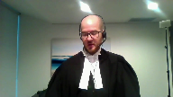
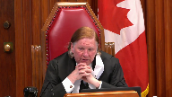
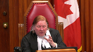

City of Nelson v. Taryn Joy Marchi
This transcript was made with automated artificial intelligence models and its accuracy has not been verified. Review the original webcast here.
Justice Wagner (00:00:02): Thank you.
Good morning.
In the case of City of Nelson against Tyron Joy Markey, for the appellant, City of Nelson, Greg Allen, Liam Babbit, for the intervener, Attorney General of Canada, Sean Goddette, for the intervener, Attorney General of Ontario, Sonal Ghandi, for the intervener, Attorney General of British Columbia, Megan Butler, for the intervener, Attorney General of Alberta, Doreen Mueller, for the intervener, City of Abbotsford, Aniz Alani, for the intervener, City of Toronto, Michael J. Simms, for the respondent Tyron Joy Markey, Danielle K. Daroux, and Michael Sabkin, for the intervener, Ontario Trial Lawyers Association, K. J. Ralston.
Please note that Justice Karygatsanis, although not in the courtroom, participate to the hearing.
Mr. Allen.
Speaker 1 (00:01:43): Morning Chief Justice, Justices, may it please the Court.
The primary issue raised in this appeal is the application of the policy defense which can immunize government bodies from liability and tort in certain circumstances.
As the Court is aware, this case involves a significant snow event falling on a small British Columbia municipality with scarce resources and the municipality’s attempt to ameliorate the hazards associated with the snow.
At trial, the claim against the City of Nelson was dismissed on the basis that the impugned decisions and conduct of the City were policy in nature insofar as they were guided by public policy considerations including economic factors and social factors.
We say that the policy defense does apply on these facts and the City should bear no liability for decisions it made and the actions it undertook to respond to the snow event while balancing the interests of competing stakeholders and operating within budgetary constraints.
These are quintessentially governmental decisions even those that were made by lower level officers and not by legislators and should not bear scrutiny by the courts.
The appeal raises secondary issues of standard of appellate review, the standard of care, proximate cause, and sufficiency of reasons as you will have seen in the party’s factums.
I will be focusing primarily on the policy defense and I will attempt to make time later in my submissions for sufficiency of reasons because that issue was raised in the respondent’s factum and I appreciate that the Court has not yet had a chance to hear my client’s position on that.
Starting first with the policy defense.
The starting point of course as this Court is aware is this Court’s decision in Imperial Tobacco which I would submit is the last case in which this Court extensively grappled with the application of the policy defense.
Justice Karakatsanis (00:03:51): Can I stop you, Mr. Allen, just so I understand conceptually where we are, you call it the policy defense and in fact you conceded prima facie a duty of care subject to this policy defense and I’m just wondering where that suggests it’s kind of like in a stage two, there would be a duty of care, you know, which is negated, but is that really where we are?
Are we at stage two or are you really saying this is an established recognized duty of care for road maintenance, road safety, for non-policy operational matters and so really this goes to whether you fit within that established duty of care or not.
It’s just very confusing where this policy versus operational versus implementation falls conceptually in this case.
There’s suggestions that it falls in different places.
Speaker 1 (00:04:56): Thank you Justice Kerikatsanis.
It’s the position of the city that the policy defense applies at stage two of the Anz and Cooper test.
As you indicated that is after a finding of a prima facie duty of care and this is an overarching policy consideration that negates that duty.
Justice Karakatsanis (00:05:14): The only problem with that is that there’s also in Ans Cooper and in Leiven the suggestion that once it’s been done, there’s a recognized duty of care, you don’t have to redo the stage two policy part of the test.
So that’s the difficulty I have with placing it there.
Plus, without the proximity analysis and because there’s been no analysis with respect to the prima facie, you’re kind of deprived of some of the considerations that would help you doing a stage two.
So that’s why I think it does matter where conceptually, we are.
Speaker 1 (00:05:55): And I appreciate those statements from Live Ent and from Cooper, and to some extent, and I think this comes through in the party’s factums and the interveners’ factums, the policy defense is a bit of a unique creature at common law.
And in my submission, it’s best considered at stage two of the Anson-Cooper test, because this is effectively assessing whether or not there are policy considerations that are unique to governmental bodies that would otherwise negate a duty of care that would exist in.
Justice Wagner (00:06:27): Mr. Allen, could you elaborate on what is the basis for the prima facie duty of care in this case?
Speaker 1 (00:06:37): Well, the one, it comes through statute, Chief Justice, there’s the Occupiers Liability Act in British Columbia.
The City of Nelson has a duty to its residents to make the roadways of the municipality, staircases, parking spots, et cetera, safe for use by its citizens.
And I think that’s the basis for the stage one analysis.
And then we move to whether or not in stage two, whether there are these overarching policy considerations that would otherwise negate that.
And I would add to that, that traditionally, I just, I guess,
Justice Rowe (00:07:17): I just wonder, I mean, the suggestion seems to have been put forward that if there’s an established category, you’re not allowed to look at policy and operational decisions, which would have the effect that that part of the analysis would simply disappear, it seems to me, which can’t be accurate.
I mean, unless the court is going to decide that that aspect of the analysis is simply going to disappear, it’ll cease to exist.
Speaker 1 (00:07:51): And I agree with you Justice Roe that that cannot be accurate and it may be that there is an inconsistency in terms of how the Ans Cooper test for negligence applies along with this policy defense
but I think the answer is to perhaps revise the first stage of the Ans Cooper test so that these considerations can be entered into that part of the analysis.
This court has traditionally applied the policy defense in stage two of Ans Cooper and I would suggest that’s the proper place in order to do the analysis but if there is a consideration or perhaps a bar on consideration in stage one of the Ans Cooper test perhaps that needs refining in order for this court to properly analyze the policy defense.
Justice Martin (00:08:38): I would just like to ask some questions here because this is not the way I understand this to work at all.
I thought that after Live Ent, if there was an established category of liability in terms of a duty, then we followed the rules that were set out by this court.
For example, if it was a negligent misrepresentation, we did not have to do the prima facie duty policy analysis because we had set out particular rules that were appropriate to proximity and all of the policy considerations that would have taken place, but we built them into the negligent misrepresentation law.
I would have thought that we would approach this in a similar way, which is to say from just up through to imperial, this court and others have articulated what happens when you’re having a governmental decision and that that is an established category, which we determine by reference to those cases that set out that there is an initial distinction we make between the policy decisions which do not give rise to a private duty of care versus those which are operational or discretionary operational decisions which do give rise to a duty of care.
So that within just and imperial, we have those same questions, but done by reference to rules that are tailored exactly to the circumstances at hand.
So I don’t understand why we’re overlaying the Anne’s case here in this way when all the work can get done in terms of the policy reasons why we have a policy category in just through to imperial can be done that way.
Do you understand my problem with the way you’re conceptualizing this?
Speaker 1 (00:10:44): I think I do Justice Martin and the way that I have conceptualized the case is how I’ve taken this court’s authority as to the policy defense thus far.
There’s obviously no bar to this court treating it in a different way and if I have your point I think it speaks to the the overall problem of justiciability that it’s been stated that these policy decisions are not justiciable and so I understand the impetus to perhaps put this analysis at the front end rather than have it come after a prima facie duty of care is found.
Justice Martin (00:11:17): Right, because the just framework allows for consideration of all of the extent to which this is policy and puts it beyond the scope of a private law duty of care.
And that’s just disability.
I agree with you on that.
Overlapping speakers (00:11:34): Yes.
Justice Karakatsanis (00:11:34): So, that brings me kind of back to my first question, which is the issue really is one about policy versus implementation, and wherever you fit it conceptually, it’s the same analysis.

And I just wanted to get your views on onus.
At stage two, the onus is on, well, it would be on the city here, on the government authority, and that makes sense, obviously, the government authority has the information and the knowledge and the basis upon which to do it.
So I just want to make sure that you agree the onus would be the same, no matter where it fits into the conceptual framework.
Speaker 1 (00:12:19): Yes, Justice Karakatsanis, I do agree with that.
As a practical matter, as you say, the public body in these circumstances has the information at hand.
They have the ability to call the evidence that’s necessary to establish what considerations were at play, which underlie the conduct or the decision at issue.
Anchoring it, pardon me.
Well, I was going to ask one other question, but finish your thought there.
Just to anchor it in the facts of this particular case. Okay.
Well, then…
Justice Karakatsanis (00:12:49): And before you do that, let me ask mine, because it is also another kind of methodology question, which is you also raise in your fact an interesting point, which is that many of the concerns about liability for a government authority also come out in other policy considerations at stage two, like indeterminate liability, resource, those kinds of things.
Would that still play a role in the government?
Does it play a role here?
And where does it play a role?
Speaker 1 (00:13:29): And so I would answer that in two ways, Justice Caricatanas.
First is with respect to how this court has traditionally looked at the policy defense, which is at stage two of Vans and Cooper.
And in that circumstance, it does play a role.
And this court in Imperial Tobacco both determined that the policy defense applied and also went on to consider those other policy considerations at stage two of Vans and Cooper.
If it is to be shifted to, for lack of a better term, the front end of the analysis and is to be viewed on justiciability issues, then I would suggest that those other policy considerations would not come into play because we don’t even enter the realm of Vans and Cooper in the event that the policy defense would apply.
If I could, we have Imperial Tobacco at tab six of the condensed book.
And I would just like to take the court to a couple of paragraphs of that decision.
In particular, I’d like to start at paragraph 78 of Chief Justice McLaughlin’s decision.
And at paragraph 78, she writes, the main difficulty with the policy slash operational approach is that the courts have found it notoriously difficult to decide whether a particular government decision falls on the policy or operational side of the line.
Even low-level state employees may enjoy some discretion related to how much money is in the budget or which of a range of tasks is most important at a particular time.
It is the decision of a social worker when to visit a troubled home or the decision of a snowplow operator when to sand an icy road, a policy decision or an operational decision.
Depending on the circumstances, it may be argued to be either or both.
Justice Rowe (00:15:25): I’ll pause there to just-
Well, you know, I’m gonna give you an example where I think it’s absolutely crystal clear.
Back home in Newfoundland, when there’s a snowstorm, they don’t put plows on the road.
That’s a policy decision because you have to run the plow back and forth constantly, and it costs a lot of money.
So in a snowstorm, you’re on your own.
You either go on the road and take your chances, or you don’t go on the road.
That’s different from saying, when the snow plow went out, the snow plow operator made such a bad job of clearing the road that it was dangerous.
You know, I mean, when you get down to concrete examples, maybe it’s not quite as esoteric and abstract, and it’s easier to ascertain, I think.
Speaker 1 (00:16:15): Justice Roe, I’ve never had the good fortune of being in Newfoundland in the winter
but I think your example is exactly right.
That policy is about the deployment of resources, sorry about the allocation of resources, how much in the way of resources a local government will allocate to respond to a snow event or another hazard and about the deployment of those resources, where those resources will be placed in the local government to best respond to the hazard.
What happens functionally on the ground, as you say the snowplow operator, if the snowplow operator puts his or her plow two inches above the road surface as compared to half an inch and that leaves more snow on the road surface than would be expected, that’s not policy, that’s what would be described in the case law as operational.
But I think it’s important that Chief Justice McLaughlin notes at paragraph 78 that it really doesn’t depend on the role of the officer in question.
That’s one of the factors that goes into the analysis but it doesn’t have to be a legislator making decisions in order for that decision to constitute policy.
It can be what we would traditionally consider a lower level municipal employee.
In this case we’re talking about a work superintendent and we’re talking about her lead hand.
Those quote unquote quote unquote lower level employees can still make policy decisions depending on the nature of the decision and the guidance that they would receive in making that decision from public policy considerations.
And Chief Justice McLaughlin goes on at paragraph 78 to write the policy slash operational distinction while capturing an important element of why some government conduct should generally be shielded from liability does not work very well as a legal test.
And you would have seen that quote in almost every party’s fact before you today that it does not work well as a legal test.
And what I would posit for this court is that Chief Justice McLaughlin is not saying the policy defense as a concept doesn’t work well as a legal test but this dichotomy between policy and operational does not work well.
It doesn’t assist the court to have operational as a foil to policy.
And the Chief Justice goes on in Imperial Tobacco to specifically reject an approach which would have the policy defense defined as what is not operational.
And that’s important in this case because in the respondents fact and the respondents note repeatedly that the trial judge erred by failing to explain why the decisions of the appellant city were not operational.
And it’s the city’s position coming out of Imperial Tobacco that it wasn’t incumbent on the trial judge to do that.
There was no obligation on the trial judge to explain why the city’s decisions were not operational.
Justice Côté (00:19:14): Is there a distinction because in some cases, and I’m referring to Imperial Tobacco and Just, the expression core policy decisions is used and other decisions policy decisions.
Is there a distinction or is it it’s irrelevant to talk about core policy or just policy decisions?
Speaker 1 (00:19:39): I think that’s a distinction without a difference, the use of the word core.
I think what the court is to look at is the test that Madam Justice McLaughlin sets out at paragraph 90 of Imperial Tobacco, whether that’s referred to in the authorities as core policy or simply policy, the analysis is the same.
And at paragraph 90, she defines it as core policy and she writes, I conclude that core policy government decisions protected from suit are decisions as to a course or principle of action that are based on public policy considerations, such as economic, social and political factors, provided they are neither irrational nor taken in bad faith.
And so that’s the test.
There’s no requirement to define this negatively.
She says that explicitly in the next sentence.
This approach is consistent with the basic thrust of Canadian cases on the issue, although it emphasizes positive features of policy decisions instead of relying exclusively on the quality of being non-operational.
And so if the court is satisfied that there’s been a decision or a course of action taken that’s based on public policy considerations, such as economic, social and political factors, and that it’s not irrational and that it’s not in bad faith, there is immunity from tort liability.
Justice Moldaver (00:20:57): Just help me out factually here, because maybe I’m confused.
Clearly on this record, as I understand it, there’s lots written as to how the city is going to go about an operation of when there’s a big snowfall.
And in terms of they look at the monetary aspect, they look at the social aspect, et cetera, et cetera, and they came, and it’s in writing, to a policy decision of how we’re going to go about this.
It seems to me this is clear policy.
We’re going to clear the downtown first.
Then we’re going to get to the outskirts because if people can’t get out of their homes, they’re not going to get into the downtown core and so on.
So speaking for myself, I see all of that in terms of what I will call clearing the roads as a policy decision, and it’s clearly related to finances and person power and so on.
I don’t see that with respect with these windrows and when they get cleaned and how we sort of get rid of them in terms of people being able to walk over to the sidewalk.
We know the sidewalks are clean.
That’s part of the original policy thing.
But help me out, because I understand the windrow thing is just something that they’ve been doing for many years.
There’s nothing written about it.
They could change that if they wanted to.
Am I missing something there?
Why does it come into a policy as opposed to just the means they’ve chosen to go about clearing or removing the snow as opposed to clearing the streets?
Speaker 1 (00:22:40): Certainly Justice Moldaver and if I could I direct the court to tab three of the condensed book which has the written policy that’s at issue in this case.
And as the court is aware this was of course buttressed by the trial judge’s finding with respect to certain aspects of unwritten policy which are a paragraph five of the trial judge’s decision.
But what the written policy sets out as Justice Moldaver has indicated is a priority sequence for clearing the streets and that’s based on budgetary guidelines it’s based on social impacts of having plows run through the streets etc.
And then in the second last section under downtown the second bullet it indicates removal of snow from the downtown areas may be carried out in conjunction with any of the above priorities and as warranted by build-up levels and so when the city clears the streets pursuant to this policy the parking stalls that are on the street are part of the streets and so what that ends up doing is this process that’s called in the in this particular case wind rowing the curb where the parking stalls are cleared and the snow is pushed up against the curb to clear the street portion of the parking stalls.
What the policy doesn’t have is any sort of additional step between clearing the streets and removing the snow in which the city requires itself to do anything if you will with the snow that’s already on the ground.
What the respondent says the city should have done is they should have had a policy or pardon me they should have had conduct where they move these wind rows into particular parking stalls so they don’t present a hazard.
The evidence of Ms. MacDonald at trial who is the work superintendent is that that would you can’t do that with the plows that are plowing the streets you either need to put a different blade on those plows or you need a different vehicle altogether and so it’s an additional step and additional resources that the city would have had to outlay in response to the snow event and so the fact that it’s not
Justice Rowe (00:24:56): But let’s be specific, you need either a front-end loader to put it in the back of a dump truck, or you need a snow blower to put it in the back of a dump truck.
I mean, that’s the only way you can move large amounts of snow out of an area and move them entirely.
That’s the only way you can move large amounts of snow out of an area and move them entirely.
Speaker 1 (00:25:17): I appreciate that Justice Rowe
but I think the respondent’s point if I have it correct is not with respect to the removal of the snow which is in the policy and happens in conjunction with the priorities
but they say an additional step should have been taken once the snow was plowed or once the roads were cleared and the curb was wind rowed if you will to then move that wind row into one parking stall so that it didn’t present a hazard for individuals in the circumstances of the respondent and my point is that the evidence at trial was that that would be an additional step which required additional resources because you couldn’t just do it with the plows who were out on the streets that we’re out on the streets already.
Mr. Allen.
Justice Martin (00:26:02): because there’s a cost associated with it doesn’t make it a policy decision in that demarcation because there’s a category of discretionary operational decisions that basically how you do something will have implications for cost for resources and for risk
so just because there’s evidence that doing it this other way would cost more how does that transform it into a policy decision rather than uh being within the operational category and we just understand that every choice has a financial cost associated with that’s the risk assessment we do in torts all the time
Speaker 1 (00:26:49): Well, Justice Martin, what I would say is that the respondent’s criticism in this case is a criticism of the policy itself.
Because the respondent is saying the policy has step one and step three.
Step one being clear the roads and step three being remove the snow out of the downtown area.
And the respondent is saying the policy also should have had step two, which is to either move the snow into particular parking spots.
One of the other things the respondent suggests is having individuals hand shovel roots of egress through the windrow.
And I say that that is a policy decision of the city because in setting out how they respond to snow events, they have said we will do step one and step three.
We are not going to expend resources to deal with the snow when it’s on the ground, other than removing it as soon as possible.
Justice Kasirer (00:27:37): Mr. Allen, I’m wondering if this exercise doesn’t show us what a lot of people have been pointing to in the criticism about the distinction between policy and operational decisions.
It strikes me that, as some people have written, that this is an instance of the court’s losing sight of why the question is being asked in the first place.
Shouldn’t we be asking ourselves, and I go back to this theme of justiciability, whether the question is something that a court is institutionally capable of deciding, or whether it’s something the court should accept that it has no role to play in.
The policy, it belongs to the polis, it belongs to this political sphere, whereas its implementation can be reviewed by a court.
Isn’t justiciability the core issue here, and the distinction is just a way of showing how it works?
Speaker 1 (00:28:42): I think that’s precisely right, Justice Kasserer, that justiciability imbues the basis for the policy defense, whether it comes as it has traditionally come in the jurisprudence at stage two of Vance Cooper, or whether it comes as a preliminary inquiry before assessing the duty of care altogether.
And that’s the basis for my point here, perhaps in Artfully Made, is that the respondent comes to this court essentially criticizing the manner in which the city allocated resources to snow events and deployed those resources.
In the respondent’s factum, they make a number of prescriptions that they say the city should have followed in these circumstances.
And it’s telling that each one of those prescriptions either requires more resources to be allocated or the resources that were allocated to be shifted.
So as an example, if you have individuals hand shoveling routes of egress through windrows, those are individuals who won’t be hand shoveling stairs and sidewalks and handicapped parking stalls, which just shifts the risk onto a different section of the city of Nelson’s population.
And so in criticizing the policy itself, I say the respondent is asking this court or asking the courts generally to review something which is exclusively within the jurisdiction of government and which the court has no role to review.
Justice Côté (00:30:10): Mr. Halland, I have an hypothetical question for you, an hypothetical example.
Let’s say that the government decides to build a road, but in order to decide about the design of the road, the government, of course, is taking into account the cost associated to the construction.
Then the road is built and accidents happen, and it is proven that those accidents are happening because of a defective design of the road.
Would you say that the government is immune of any liability?
Speaker 1 (00:30:54): or not?
Justice Cote, I think in that hypothetical, it would depend on the reason why the road is defective.
If the road is defective because the government had options before it to design the road and say, design A or design B, and design A would have been safer, but would have cost more money, and design B would have been less safe, but cost less money.
The fact that the government chose design B because of their budgetary constraints, that decision I would say is immune from liability and tort.
If the road is defective because the government employees who designed it erred in their professional judgment, I think that would be subject to review from the courts and tort liability.
And that’s what we saw, I think in Kamloops and Nielsen, where there was a building inspector who was sent out by the municipality to do inspections and did so negligently.
The exercise.
Justice Martin (00:31:52): Sorry, can I just go back?
Because you said something that sort of stopped me.
You said that justiciability is a separate inquiry before duty of care.
And I’d always understood that the same concerns about justiciability, excuse me, were built into the policy operational distinction.
And that was indeed the reason why that was formulated, which was to separate those public duties that gave rise to a private law duty of care.
And so I don’t see justiciability as a separate thing.
I think it’s embedded into the operational policy distinction.
And the same considerations apply.
They’re just in a different place and have been through Justin Kamloops, kind of formulated, baked into the test as it were.
Speaker 1 (00:32:56): Yes, Justice Martin, that is traditionally how these justiciability concerns have been reflected in this area of law, that they inform the reason why the court has determined that policy decisions are immune from tort liability.

The distinction with great respect is immaterial to my client because I think it doesn’t change the test.
Whether the test comes at the front end of the duty of care analysis or in stage two, I think the factors are the same and I think that the the underlying considerations that give rise to the test are the same as well.
Justice Karakatsanis (00:33:35): If you’ve finished on that point, I do want to come back though.
I do want to understand what basis you say that there is a prima facie duty of care.
Accepting your structure, which this is stage two, you’ve conceded prima facie duty of care, you refer to a statutory duty, or is it a just and brown sort of recognized duty?
What is the basis on which you concede there is a prima facie duty of care?
Speaker 1 (00:34:08): Well, in this particular case, Justice Carrick consents, and to be fair, I wasn’t trial counsel, but my understanding is that the prima facie duty of care was conceded on the basis of the British Columbia Occupiers Liability Act, that as an occupier, the city of Nelson has an obligation to make its streets reasonably safe for its population.
I think there would be an alternate route through what this court decided in Justin Brown in terms of local governments having these obligations when they undertake to conduct, for example, snow removal, that they owe a duty of care to those who then use their streets in that circumstance.
Justice Karakatsanis (00:34:49): Thank you, that’s helpful.
Justice Moldaver (00:34:51): Can I just go back to an answer you gave me, sir, in respect of the written policy?
It seems to me the removal of snow comes within what I would call a discretionary matter.
And I would have thought if I’m right about that, that it’s discretionary as to whether you remove all the windrows in one fell swoop, albeit at some point later on in the process, or you create some gaps along the way for people to get through.
That’s a discretionary decision.
Then I would have thought as well that you would look to what’s going on.
Have there been multiple broken legs and ankles and everything using the windrow, leaving the windrows in place for a longer period of time before you take the whole of the snow out?
And if in fact it came to the city’s attention that people were regularly, you know, having sprained ankles and broken legs and broken knees and everything trying to get over these things, I would have thought that would be something that would impact on the exercise of the discretion.
Now, vice versa, if there are virtually no complaints and this thing is working, seems to be working okay, then I would have thought basically it all would go into standard of care, I guess, but you could carry on with the discretionary way in which you’ve been removing it as long as you want it.
But still, if it’s discretionary, it seems to me it falls closer to operational than policy.
But help me out with that, please.
Speaker 1 (00:36:44): Certainly, and so the way that I read the written policy, as buttressed by the unwritten policy found by the trial judge, is that there actually is not discretion afforded to city officials to deal with the windrows on the ground other than completely removing them.
As I said, the way I break it down is that the policy essentially has what the respondent would characterize as step one and step three.
One being clear the roads and windrowing the curb, and three being removing the snow.
There’s nothing in the policy to suggest that when the curb has been windrowed, that then the work superintendent or the lead hand has discretion to allocate resources to either move the windrow or to shovel roots of egress through the road.
Justice Moldaver (00:37:33): thought that was just a custom I thought they’ve been doing that they’ve been doing it that way and and they just have left it they just continued I didn’t think that was a kind of carved in stone policy it’s just we’ve been doing it that way and we’re gonna keep on doing it that way but not because of any as I say carved in stone policy
Speaker 1 (00:37:55): And sorry, Justice Moldavar, just to make sure I understand the question, are you referring to the process of windrowing the curve?
Is that…
Overlapping speakers (00:38:02): what you’re suggesting is customary to what we’re dealing with in this case.
Speaker 1 (00:38:05): So, in my submission, windrowing the curb, moving the snow to the curb is a function of the first step of the policy, which is clearing the streets.
You can’t clear the streets if the parking spots that are on the streets are themselves empty.
Justice Moldaver (00:38:21): removing those banks.
We used to call them snow banks.
Wind rose is some special word.
We used to call them snow banks along the street, you know?
And half the time the owners of stores, if they were there, they’d get out with a shovel and they’d clean a path so that customers could get in.
All sorts of ways of doing this.
Or other people, people would cross it and they’d create a path and so on.
So this is not rocket science.
I’m just saying that the custom has been in Nelson.
I’m not faulting it.
I’m just saying it’s been a custom.
But it’s not carved in stone, surely, because if in fact you’re getting people with broken legs virtually every day when there’s a snowfall, I would have thought you would sort of change the operation in terms of how you get rid of or when you get rid of these wind rose.
Speaker 1 (00:39:18): And so the there is discretion left to the work superintendent in terms of the removal of the wind rose hauling the snow out of the downtown core and that’s in the policy itself but the city has made a policy decision to allocate its resources to for example there’s a number of city employees who are out hand shoveling during the snow event and they’re hand shoveling handicapped parking spaces, stairs around the city, they’re hand shoveling roots of ingress and egress to curbs to the corners of the blocks so that anybody who parks in the block can walk to the corner and access the sidewalk.
And so that’s the policy decision that the city has made and they have made a decision not to allocate resources to what the plaintiff says they should have done in this circumstance.
Justice Rowe (00:40:09): So
Speaker 1 (00:40:19): I’m sorry, Justice Roe, I can’t hear your question.
Justice Rowe (00:40:26): Can you hear me now?

Yes, I can.
Thank you.
I mean, it seems to me that implicit in the city’s policy is that people who get out of cars are compelled either to climb over the snow bank and take their chances, or the obvious alternative is walk around the end of it.
And so there is the allocation of resources, there are the options that are being given to citizens, and that’s implicit in the policy.
Speaker 1 (00:41:03): That’s correct Justice Rowe.
I mentioned earlier the allocation of risk as amongst the residents of the City of Nelson.
The City has made a policy decision that it’s more important to hand shovel handicap parking spots, it’s more important to clear routes of ingress towards the hospital etc.
The other thing I would note is that in paragraph 5 of the trial decision one of the things the trial judge finds is that it was unwritten policy that the removal of these windrows the hauling of snow out of the downtown core starts in the adjacent block which is the 400 block of Baker Street and follows the bus route so that anybody who’s I suppose getting off the bus doesn’t have to deal with a snowbank or a windrow and at the time that the plaintiffs befell her accident the 400 and 500 blocks of Baker Street were entirely clear.
The snow had already been hauled out of the downtown core and so there is this risk allocation and the City has to make some difficult decisions in that regard and ultimately you’re correct Justice Rowe that if the windrow is not cleared at the time when a citizen parks there, I presume what the City assumes the person will do is walk to where the routes of ingress to the sidewalk have been hand shoveled and that’s reasonable for the City to make a policy decision in that regard in terms of the allocation of its resources.
Justice Karakatsanis (00:42:30): Can I ask you, you’ve referred several times to the findings in paragraph five of the trial judge about the unwritten policies and policy decisions.
Is there any analysis anywhere in this decision explaining why he says those are unwritten policies?
Why they’re policies and not implementation and not operational?
Where would I find that in his reasons?
Speaker 1 (00:43:03): Justice Carrick-Consantis, there is not explicit analysis of that point.
The trial judge, he concludes that the city made policy decisions based on budgetary economic and social factors and that it followed its policy decision.
He doesn’t explicitly tie that finding to the unwritten policy and the written policy.
That’s an omnibus finding, if you will, later in the reasons.
Justice Karakatsanis (00:43:28): So do we take it that he found that everything related to snow removal, any kind of discretionary choice with respect to snow removal would necessarily be policy.
Speaker 1 (00:43:44): I don’t think that that’s his conclusion.
What he specifically identifies is, I believe it’s eight unwritten policies at paragraph five, and then the written policy, which I’ve taken the court to as well.
I don’t think there’s anything in the reasons to suggest that every discretionary decision that would be carried out by city employees would necessarily be policy, but I won’t resile from the fact that it is a broad scope of policy that he finds, and I think that’s reasonable in the circumstances.
If I could just briefly take the court to that paragraph five, that’s, the trial judge’s reasons are at tab one of the condensed book, and paragraph five starts at, the operative part starts at page four.
And so, as I mentioned a moment ago to Justice Kerikatsanis, there’s no explicit finding that these unwritten policies are guided by public policy considerations, economic, budgetary, social, political.
But if you look at the findings themselves, you can see those elements of public policy considerations come through.
So let’s look, for example, at paragraph five E. Snow removal, i.e. the removal of snow banks in the downtown core starts at the 400 block of Baker Street, where the main bus stop is located and proceeds towards Hendrick Street eastwards following the bus route.
And so there’s obviously a social reason why you would prioritize the hauling out of these snow banks starting in one of the blocks of the downtown core, it’s not a large municipality, and then following the bus route from there.
Then in paragraph five F, he indicates in terms of priority sequencing that there’s, first of all, snow removal and hauling stops when the downtown core starts to get busy with businesses and pedestrians and traffic.
And at that point, the city’s resources shift to other areas such as the civic center, the clinic, the fire hall, the police station around schools, and then returning to Baker Street as soon as they can.
So again, there’s no explicit finding that this is guided by public policy considerations, but you can see those public policy considerations in the finding itself in my submission.
Justice Kasirer (00:46:05): But Chief Justice McLaughlin said in the very paragraph that you cite that that’s true of just about any practice in a municipality.
That’s the problem with the distinction.
It’s just putting a tag on it doesn’t do the work.
The judge just put a tag on it.
He didn’t explain to anybody why this is these are policy matters and and indeed Chief Justice McLaughlin even gives the example of the decision of a snowplough operator when to send an icy road as something that could be policy or could be operational depending on the circumstances.
I’m wondering if do you really think all of this should be insulated from review by a court on the basis of the law of negligence because that’s basically your position.
Speaker 1 (00:46:58): It is Justice Castro and my position is to the extent that decisions are being made about how much in the way of resources a local government is allocating to a problem or how those resources are allocated within the local government those are policy decisions which should be immunized from review.
Justice Karakatsanis (00:47:19): decision to decide what would be left oh sorry go ahead i’m wondering what would be left what would you consider to be implementation or operational who what’s what’s left
Speaker 1 (00:47:31): Certainly, so to the extent that the distinction between policy and operational is helpful to this court, and I would suggest Chief Justice McLaughlin is saying in Imperial
it’s not that helpful, but what is left for the operational sphere I say would be two general categories of decisions or conduct.
One is decisions or conduct that are not directed by policy.
So for example, the actual act of driving the snowplow.
There’s a long line of authority that says the act of driving a vehicle cannot be policy.
That’s operational in nature.
Or for example, the exercise of professional judgment, which is an example that I gave previously that we saw in Kamloops and Nielsen.
The second general category would be decisions or conduct that are directed by policy, but nevertheless don’t follow the policy.
So an example would be if a snowplow operator decided he wanted to plow his own street before following the priority sequence.
If it could be established that a citizen was injured and that was causally related to that decision to not follow the policy, then the city would not be immunized from tort liability in that circumstance.
Justice Rowe (00:48:41): I wonder if another simple example, because I always like simple examples, is just how I think.
On this side of the Ottawa River, salt is not used on the roads.
Presumably it’s some environmental consideration.
On the other side of the river in Quebec, salt is used on the roads.
Presumably they care more about the safety of their citizens.
So that to me is a policy decision.
But if you go across and you’re going on the Gatineau Parkway or something and the road has been sanded, but in a particular section, no sand was laid down.
And it’s just like a death trap because it’s full of black ice.
I mean, bingo.
Use sand, don’t use sand policy.
Just put the sand on the road in a way that makes the road safe.
It seems to me.
Speaker 1 (00:49:41): Yes, I think that’s right.
And Chief Justice McLaughlin says in Imperial that, and this Court said in Hintz, that these are necessarily contextual analyses for the Court to undertake.
And so even in the example of a portion of the road not having sand on it, the easy answer is that that’s an operational failing.
You know, a snow plow operator simply toggles off the switch that is releasing sand as they drive on a particular section of the road.
But if the snow plow operator is told at the beginning of the year, you have a $750 budget for sanding and we rely on you to determine when to deploy that over the course of the snow events of the year, then perhaps it is policy.
And that’s why even in the situation of snow plow operators, which are, one would presume, essentially non-discretionary employees, Chief Justice McLaughlin says in Imperial that depending on the conduct, depending on the decision, it could have elements of policy or it could simply be operational failure.
Justice Kasirer (00:50:40): The difference is that the decision, the political decision to assign $750 of the budget to sand is one that’s not justiciable.

That’s a political decision.
But how it’s carried out, that can be done negligently.
And that’s, the courts, we can’t say that the courts have no role to play in reviewing that.
There’s, it seems to me, the plain distinction is up river from where you’re putting it.
The danger is that your expansive idea of policy is going to do just what Chief Justice McLaughlin was worried about, gobble up the whole usefulness of the distinction in the first place.
Speaker 1 (00:51:24): Justice Kasser, I think that point is answered by a principle that comes through the American jurisprudence and in particular the U.S. Supreme Court decision in Gobert, which was followed by this court, followed is perhaps the wrong term, but was used as helpful principle by this court in Imperial.
And there’s a principle in Gobert which says, when there is a policy which is dictated by public policy considerations and discretion is afforded to an actor under that policy, it can be presumed that the actor exercising that discretion is similarly guided by the same public policy considerations.
And I would urge the court to adopt that principle in this case and to have that as a principle of Canadian law.
Justice Martin (00:52:13): Mr. Allen, may I ask you to move a little bit to, we’re running out of time here.
I’d like to hear you on a couple of points.
One is the standard of care point, especially given the confusion between what the evidence put forward by Roslyn, Castlegar and adjacent communities, how that was used by the trial judge.
And I’d like to ask you this question about remedy.
If we find that there is a duty of care, what do you say we should do with this case?
Speaker 1 (00:52:51): So, I’ll start first with respect to remedy.
If this court finds that the policy defense does not apply and that there is a duty of care, in my submission, the case should still nevertheless be dismissed because of the standard of care analysis and that perhaps provides me an easy way to respond to both aspects of that question, Justice Martin.
In the city’s position, the trial judge concluded that the city had met its standard of care.
That is reviewable on a palpable and overriding error standard and there’s no reasonable argument I say that the trial judge made a palpable and overriding error in reaching that conclusion.
Specifically, with request, with respect to your question about the evidence from individuals in similarly situated municipalities, the trial judge’s conclusion in that respect was that the evidence was not very useful in the trial.
The evidence was not very useful because there was a difference in snow loads as between what were described as similarly situated municipalities.
There was differences in traffic flow.
The evidence at trial was that the municipalities were different in size and so he ultimately concludes that that evidence is not particularly helpful to his analysis of the standard of care was in the circumstances.
And I would say that sort of conclusion is the province of the trial judge.
He hears the evidence.
He has to make a conclusion or he has to make a determination as to what the applicable standard was and whether or not the city met that standard and in so doing, he says that that evidence was not particularly helpful and not particularly informative in arriving at that standard.
I think the case was clear.
Justice Moldaver (00:54:43): And that’s a finding that he was entitled to make and there’s no basis to interfere with it.
It’s one paragraph that the Court of Appeal picks up on where he uses the word rational as well, but in just the sentence before that, he applies the proper test for the nature of the risk that you have to find.
And so I think you’ve answered the first part, which basically is he was entitled to make those findings.
That’s a finding of fact.
The other one, it’s not that he didn’t consider it in assessing whether the, what the standard of care should be.
He just found that it wasn’t helpful.
Totally a trial judge’s prerogative it seems to me.
And on the other one, it’s kind of nitpicking when you say, you know, he used the word the policy is rational, but he was talking about nothing in the evidence showed that
and he calls it a policy of the city was unreasonable or the result of a manifest lack of appreciation for the risks involved.
I mean, they picked up on that because he used the word rational in the next sentence.
Speaker 1 (00:55:50): I think that’s right Justice Moldaver and so with respect to your first point these conclusions about the evidence of similarly situated municipalities and his effective rejection of that evidence was entirely within his discretion as a trial judge and that’s the sort of finding that is entitled to deference on appeal.
With respect to the Court of Appeals conclusion the Court of Appeal finds that the trial judge’s analysis of standard of care was colored that’s their word by his view that a policy defense was available to the city and that rationality rather than reasonableness was the applicable standard and as Justice Moldaver has highlighted he uses the word rationality once in which he indicates the policy was rational and I would submit one he uses the word reasonableness throughout his reasons he cites this Court’s decision in Ryan and Victoria City which is of course the guiding authority and he concludes that the city’s conduct was reasonable and with all due respect to our Court of Appeal I say there’s no basis for a conclusion that he applied a standard of rationality rather than reasonableness but even with respect to his point about rationality he says the policy is rational and that perhaps comes up at a strange place of his judgment but the policy defense hinges on a policy that’s rational and bona fide
and so it’s entirely reasonable that the trial judge at some point in his reasons would say there’s no concerns about rationality of the policy and that’s why I apply the policy defense.
Justice Rowe (00:57:27): Having been a member of the Court of Appeal for 14 years, where you have a bad intuitive feeling about a judgment, you tend to focus on anything that you can find to identify an error.
That’s human nature.
Speaker 1 (00:57:46): And that certainly may be so, and that’s, I mean, I didn’t, I didn’t use that phrase just in passing, I do mean with all due respect to our Court of Appeal.
They’re obviously animated by a variety of factors when they’re considering a case, but I do think that the Court of Appeal’s analysis with respect is lacking both on their review of the policy defense and on their review on standard of care.
You’ve heard me with respect to standard of care.
With respect to the policy defense, the Court of Appeal essentially says that the trial judge didn’t properly address this Court’s decision in Just and the authorities that come after Just.
And I don’t see how that’s the case on the face of the trial judge’s reasons.
He sets out the proper authorities, he sets out the findings of fact that he makes, and then he concludes, I believe it’s at paragraph 15 of his reasons, that on the basis of that authority and on his findings of fact that this was, that the impugned conduct and decisions were policy decisions because they were guided by public policy considerations.
Justice Kasirer (00:58:57): Sir, Mr. Allen, it’s striking that the Court of Appeal sent it back after whatever one might think of their characterizations of the errors in the court below, they sent the case back and I think while the court was careful, circumspect about not saying that the reasons were insufficient, is it perhaps because the findings of fact did not allow it to do the kind of analysis that it thought should be done and they wanted to allow a try or a fact to do that work in first instance.
What are your thoughts about why it was sent back?
Speaker 1 (00:59:42): Ultimately, I’m not sure why it was sent back.
Of course, Justice Kasserer, that’s in the minds of the Court of Appeal judges.
There may have been, as Justice Roe has indicated, a feeling of concern with respect to these trial reasons.
But I think that that’s inconsistent with this court’s decision in REM that says the insufficiency of reasons analysis is about the functionality of the trial judge’s reasons.
It’s not for an appellate court to look at a trial judge’s reasons and determine and overturn on the basis that they weren’t ideal or that they weren’t particularly helpful.
These reasons may not be ideal, but the inquiry is about functionality.
Does it show the parties why the successful party was successful and the unsuccessful party was unsuccessful?
And I say it does.
And does it permit an appellate court to conduct a proper appellate review?
And I say it does.
Justice Karakatsanis (01:00:44): I think if you can help me with this because the respondent of course relies on this as does the Court of Appeal that the trial judge having found that it was policy similarly thought that the evidence about how other municipalities dealt with windrows or snow banks as I would call them was really a matter of policy and therefore really wasn’t relevant to standard of care.
And that is why the reference to policy in that paragraph is problematic and that is why I think what they’re saying is that there was both an extricable error of law and it just wasn’t the it just wasn’t the consideration of the evidence that he was required to consider.
And I guess just not to dance around it if in fact the court was not to send it back then of course we’d have to deal with the sufficiency of reasons problem.
Speaker 1 (01:01:55): Yes, I noticed that my time is up.
Chief Justice, if I could just have a brief indulgence to…
Overlapping speakers (01:02:00): respond to Justice Caracalla’s question.
I’m sorry I didn’t see the clock.
Speaker 1 (01:02:05): Justice Karykatsanis, I would push back on the point that the trial judge’s conclusions with respect to these the evidence of similarly situated municipalities was relevant to his determination of policy.
What he says at paragraph 36 is the attempt to compare the practices in Nelson with those of other places was not very useful and he says each of the municipalities face difficult conditions and elsewhere in the trial judgment he talks about differences in snow loads, differences in traffic flow.
That’s simply I say an assessment of the weight to be given to that evidence which then he brings to bear in his standard of care analysis and I say that that’s entirely reasonable for a trial judge to reach that conclusion given that the trial judge was the one who heard the evidence.
All right.
Justice Wagner (01:02:58): Thank you very much.
Speaker 2 (01:03:08): Good morning, Chief Justice and Justices, I’ll be making the following three submissions on behalf of the Attorney General of Canada.
The first is that the existing Anne’s Cooper framework that shields public authorities from liability and negligence for policy decisions made in good faith is fundamentally sound and should be maintained by this Court.
Second, that in this context, policy should be interpreted broadly to avoid imposing private law liability on governments for making good faith policy choices.
And third, if time permits, I’ll address the submission that the Court should assess the bona fides of policy choices made by public authorities from an attitude of judicial deference.
So my first submission, recognizing private law immunity for policy decisions made by public authorities illustrates how negligence law is responsive to the facts in individual cases and takes into account the nature of the relationship between the parties.
It’s an acknowledgement that the duties and responsibilities of public authorities are different than those between private parties.
And that they are typically defined and shaped by public law as found in statutes, regulations, and subordinate legislation.
Public authorities are mandated to act in the public interest through the formulation of policy.
And the duty of care analysis adapts to this reality by recognizing that individuals cannot sue public authorities for negligence in respect of the consequences of public policy decisions made in the public interest, provided that they are made in good faith.
Governments have to make hard choices and it will inevitably be the case that while some groups or individuals will benefit from these decisions, others may suffer foreseeable negative consequences from them.
This policy immunity recognizes this inevitable consequence or inevitable outcome rather of policymaking.
We submit that the court should not take up the paradise honey approach to establishing liability for public authorities by applying an administrative law standard of reasonableness instead of applying traditional tort law principles.
As this court recognized in TeleZone, the purposes of public law are fundamentally different from those that govern crown liability.
The overall objective of judicial review of administrative action is good governance.
It’s intended to ensure that the public administration acts within the confines of the law.
It’s directed at the legality, reasonableness, and fairness of the procedures and policies that govern the judiciary.
It’s intended to ensure that the public administration acts within the confines of the law.
It’s directed at the legality, reasonableness, and fairness of the procedures employed in actions taken by government decision makers.
In addition to these public purposes, the purposes underlying contract and tort causes of action or causes of action of the flexible code are designed to right private wrongs in the context of proximate relationships with compensation or the relief.
My second submission.
In this context, we say should be interpreted relatively broadly.
Policy decisions are dictated by financial, economic, social, and political factors or constraints.
And rather than focus on the operational aspects of the decision or conduct, the courts look for the positive markers of a genuine policy decision.
There’s no stark dividing line between formulation and implementation of policy, and the presence of those policy considerations is sufficient to engage the immunity in either case.
Bonafide policy decisions reflect a public authority’s assessment as to the appropriate balance to be struck between competing or divergent interests in a society.
They are targeted at the good of society overall, rather than the benefit of potentially affected individuals.
They reflect judgments such as about matters such as what is an acceptable population-wide risk level in relation to regulatory activity.
Which public services should or should not be offered?
If they’re offered according to what standard?
And given that public resources are always finite, determining how those resources should be allocated amongst different competing public priorities.
We say that the focus should not be on the level of the employee whose decision or conduct is at issue.
This Court has repeated that statement in cases such as Brown and Imperial Tobacco.
It’s the nature of the decision itself that must be scrutinized, not the person who made it.
And interpreting policy in this fashion does not mean that governments will be conferred total immunity.
There will still be conduct that can attract private law liability, and the examples given by Justice Roe, I think, amply demonstrate that.
Thank you very much.
Overlapping speakers (01:08:07): Thank you very much.
Justice Wagner (01:08:07): Sonal Ghandi
Speaker 3 (01:08:14): Good morning, Chief Justice, justices.
Ontario has two points in relation to common law policy immunity.
The first is that this court has already moved the policy immunity analysis away from the policy operational dichotomy.
Ten years ago in Imperial Tobacco, Chief Justice McLachlan explained how this old dichotomy does not work well as a legal test.
It distracts from the key question, which is, was the decision or conduct based on policy considerations?
In other words, did the impune decision or conduct involve the weighing of social, political, or economic factors?
This departure was recognized in the subsequent Hintz decision of this court.
There was no application of the policy operational dichotomy in that case.
Rather, the decisions of the various ministers were assessed in order to determine whether policy immunity applied.
Our second point is that in Imperial Tobacco, this court already held that policy immunity applies to conduct or course of action and is not limited to only high level decision making or planning decisions.
Policy immunity applies to the conduct which is itself based on those same policy considerations.
What remains then is that this approach needs to be followed by litigants and the lower courts.
The concern raised by some on this appeal that if policy immunity applies to conduct it will capture everything government does is misplaced.
In Imperial, Chief Justice McLachlan emphasized that the conduct in question has to be scrutinized to determine if it’s based on policy considerations.
This is the principled approach that serves the purpose of policy immunity.
To draw distinctions between the decision to carry out a course of action and the course of action where both involve or arise from the weighing of social, political or economic factors only dilutes the protection provided by policy immunity.
Justice Rowe (01:10:26): I don’t want to eat too much in your time, but I’ll give you an example which I think is very clear.

In Labrador, the airports, which are very small because they’re small communities, they’re paid for by the provincial government.
Whether or not to put in an airport is clearly a policy decision, but if you have an airport with a runway that is dangerous, it sounds to me like that’s an operational decision.
Speaker 3 (01:10:54): Thank you Justice Roe.
So what we would say is in that kind of circumstance what really needs to be assessed is the evidence around what was the conduct at issue and what was it based on.
And if the conduct or decision is based on the weighing of social, political, or economic factors then we say policy immunity applies.
So really what needs to happen is a precise distillation of what is being impugned and then a determination based on the evidence whether there was a weighing of the so-called core policy factors, so social, political, economic factors.
Justice Moldaver (01:11:38): That’s what I wanted to ask you, if I could take one moment, Chief Justice.
There was lots of evidence in terms of the overall policy of clearing the streets first.
In this case, I’m just using this case as an example.
I’m not aware of any evidence that went to the core principles, financial, social, etc.
I’m not aware of any evidence in this case that goes to the issue of leaving the windrows or not and putting gaps in them, that goes to the financial, social, etc.
Is it your position, I just want to get your position on this, that there must be some evidence that links something like the decision here to leave the windrows around, linked to these core policy matters, and if there isn’t any evidence on that, then what?
Speaker 3 (01:12:36): Thank you, Justice Moldaver.
So without weighing into the merits of the appeal, what we would say is that what that issue is the policy itself, the snow maintenance removal policy and the absence of the requirement to go in and shovel all of the snow banks is itself a policy decision.
So when the city went in and determined what the policy was going to be, it didn’t include that.
And we’re not talking about one particular corner, right?
What is what would be really called for is an additional layer or service to be incorporated into the city’s policy of snow clearance and removal.
And so it would be an additional burden that the city would be expected to go in and shovel all streets of the snow banks or all points of access that was determined based on whatever the criteria was.
So given the absence of that, to make a determination that this was something that had to happen on the ground would in effect be changing the policy.
And we say that that is not appropriate because the policy itself reflects the policy choices made by the municipality.
Justice Wagner (01:14:05): Thank you.
Thank you very much.
Ms. Butler.
Speaker 4 (01:14:12): Chief Justice, Justices of the Supreme Court of Canada, I acknowledge making my submissions today from the traditional territory of the Kwanian peoples now known as the Esquimalt and Songhees First Nations.
The Attorney General of British Columbia intervenes to submit this case is not about whether the City of Nelson owed a private law duty of care to Taryn Markey and the circumstances alleged, it’s about the standard of care to which the City of Nelson should be held and how government policy decision informs the applicable standard.
Municipal sidewalks invite pedestrian use.
Absent some specific exemption established by statute or principle of common law, a duty of care is owed by a municipality to those who use its sidewalks.
It is in this respect analogous to this court’s recognition of a duty of care owed by provinces to users of provincial highways.
Justice Rowe (01:15:01): So in St. John’s, they don’t shovel or clear the sidewalks.
In Montreal, they do.
It’s not open to St. John’s, in your view, to fail to shovel or clear the sidewalks.
They have an obligation to clear the sidewalks that arises at common law then.
Speaker 4 (01:15:25): Justice Rowe, I believe it depends on what Newfoundland’s Occupiers Liability Act says.
There was reference made to that in earlier submissions today that the duty upon the City of Nelson arose from statute and I think that’s true with respect to sidewalks, but not with respect to roads because roads are explicitly exempt in Section 8 sub 2 of the BC Occupiers Liability Act.
Whether a private law duty of care is owed is a binary proposition.
It’s either owed or it isn’t.
If a duty of care is owed, either because of an analogous circumstance or at the conclusion of the Anne’s Cooper duty of care analysis, then step one in the negligence analysis is over, period.
Step two is then determining the applicable standard of care and this is the standard of conduct against which defendant’s conduct is to be measured.
It’s therefore a bit confusing, if not inaccurate, when lower courts say things like the duty of care does not extend to the removal of every possible danger, rather the test is one of reasonableness, as the trial judge here did.
Respectfully, that conflates two distinct concepts in the analysis.
When we speak of the scope of the duty of care, what we’re really talking about is the applicable standard of care.
The common law standard of care or standard of conduct, if you will, is what is to be expected of an ordinary, reasonable, and prudent person in the same circumstances.
However, when negligence is alleged against a government, the applicable standard against which its conduct should be measured is properly informed by a bona fide policy decision made by that government about that very activity, having regard to, for example, social, political, and budgetary considerations, including the availability of personnel and equipment.
Where no such policy decision exists, then the common law standard applies.
There’s nothing perverse about a government being held to a different standard of conduct than a private defendant in certain circumstances.
It’s precisely what this court and just in British Columbia signaled when Justice Corey wrote that the standard of care imposed upon the Crown may not be the same as that owed by an individual.
I’m sorry, I cannot hear your question.
Justice Karakatsanis (01:17:49): sorry about that, why a government would be measured against another reasonable government.
I mean, I understand that point.
What I’m having difficulty understanding is how a bona fide policy factors in because if there’s a bona fide policy, there’s no duty of care.
So you’ve said we’re in a situation where we found a duty of care
and then somehow we’re back to assessing what the appropriate standard of care is based on a bona fide policy.
So I’m just having difficulty.
I accept that you would look at how the conduct of a government differently than you look at the conduct of a person.
But how does bona fide policy factor in?
Speaker 4 (01:18:37): Our submission is that while there are policy considerations at both the first and second step of the Anne’s Cooper analysis and they are different considerations and whether it’s a true policy decision factors in excuse me either at the outset or at step two policy decisions still have a role to play in terms of the applicable standard.
Government we say should be held to the standard of care no higher than what it has in good faith decided it has the available budgetary personnel and equipment resources to meet this approach. I’m sorry
I see I have I’m out of time
but if I could.
Overlapping speakers (01:19:18): You can finish your answer.
Speaker 4 (01:19:19): to finish.
Thank you.
The approach allows governments to govern and the courts should defer in a substantial way to government policy decisions of this kind unless the policy is on its face or rational.
Operational conduct that then falls below the applicable standard and causes or contributes to reasonably foreseeable harm justifiably attracts liability and negligence.
Justice Wagner (01:19:41): Thank you very much.
Speaker 5 (01:19:50): Good morning Chief Justices and Justices.
The Attorney General of Alberta has limited its submissions on this appeal to one of the issues, namely the scope of the immunity accorded to government actors for policy decisions.
The principle that policy decisions are immune from tort liability is well established.
It is grounded in respect for the separation of powers in a constitutional democracy and promotes good government.
This court and courts generally have consistently acknowledged that the law of negligence must account for the unique role of government actors, often stating that the Crown is not a person and must be free to govern and make policy decisions without becoming subject to tort liability.
The challenge has been articulating the scope of that immunity, what decisions and actions are part and parcel of the policy decision to which the immunity attaches.
In Imperial, this court provided some clarification.
The majority held that policy government decisions protected from suit are decisions as to a course or principle of action that are based on public policy considerations such as economic, social and political factors.
Defining the policy decision as a course or principle of action makes clear that it is not just the initial decision to adopt or create a policy that is immune.
The majority decision demonstrates that both decisions and conduct based on that course or principle of action adopted as policy are also immune and cannot ground an action in tort.
It recognizes, as did Justice Spinka’s dissent in just, that the substance of a policy decision is the entire scheme or system adopted including factors such as timing, manner and technique.
In Imperial, statements made by Health Canada promoting low tar cigarettes as less harmful as well as actions taken to develop and design low tar strains of tobacco by government actors even in another department were all immune from tort liability as they were all part of the more general policy to encourage people who continue to smoke to switch to low tar cigarettes.
Alberta submits that this is the appropriate approach.
It recognizes the reality that the same policy considerations will often underlay a variety of decisions and actions undertaken by various government actors even in various government departments to achieve a particular policy objective.
In the cases inconsistencies arise when the immunity is limited to the initial decision to create a policy but tort liability is imposed on the individual decisions or actions taken to implement the policy when all are based on the same weighing of social, economic and political considerations.
In Just, for example, the same budgetary considerations that were relevant to the decision to have a policy for inspection and remedial work to manage rocky slopes on highways would likely dictate the various decisions and actions taken to implement that policy.
The when, where, how inspection and remediation would be carried out.
Similarly in Brown, the same considerations about budget and availability of resources that were relevant to the decision to have a snow removal policy would also influence related implementation decisions about, for example, the frequency of snow removal, the number of sanding trucks that would be deployed, even the design of a call-out system for emergencies.
And finally, if we look at Swinimer, the policy decision to conduct an inspection for the purposes of deciding whether to fund a tree removal plan were equally relevant to decisions about the sophistication and thoroughness of the particular inspection that was conducted.
Alberta submits that application of the common law immunity from tort liability to the entire course or principle of action that is based on the policy decision made irrespective of how the individual decision or action may be characterized in isolation is a workable approach that reflects the reality of government policy making.
It is impractical and artificial to extricate the activities taken to implement the policy from the policy decision itself.
They are necessarily defined by the policy choices made.
To paraphrase comments made by this court in a slightly different context in Mikisu, in the long chain of events that constitutes a policy decision, attempting to disentangle decisions or actions that attract a duty of care from those that should be immune is an enormously difficult and likely impossible task.
Alberta submits as a result that once a policy decision has been identified, all decisions and actions taken to implement it where they are part and parcel of the policy should be equally protected from tort liability in the interests of consistency and greater certainty in this area of the law.
Those are my submissions.
Thank you.
Justice Wagner (01:24:44): Thank you very much.
Speaker 6 (01:24:58): Chief Justice, justices, court should scrutinize the actions of public authorities using public law principles.

I have three points.
First, the policy operational framework is unworkable.
Second, subjecting governmental action to a private law negligence analysis is doctrinally incoherent.
And third, administrative law is the solution.
The policy operational distinction even after adaptation upon adaptation is inscrutable.
Both TLABC and the respondents say, everything a government official does in some sense involves economic, social, and political factors.
On this we agree.
Because as Justice Stratis writes in his article, part of the operation of public authorities is to make policy.
And the carrying out of operations is pregnant with policy.
In Parity Honey, he writes, if anything, Imperial tobacco leaves us more uncertain than ever as to when the policy bar will apply.
As a legal test, it’s not fit for purpose.
Justice Karakatsanis (01:26:08): How does this factor in with the whole idea of just disability?
I mean, there’s a different purpose behind administrative law, dealing with the rule of law.
And we’re talking here about policy and just the separation of powers.
So just tell me how the idea of just disability would factor in.
Speaker 6 (01:26:30): Justice, I think from an administrative law perspective, courts have demonstrated a strong willingness to find justiciability where they can to ensure there are no legal black holes.
And so we’d say, look at it from the perspective of would this be a decision that’s amenable to judicial review and take in justiciability from that angle rather than trying to figure out where justiciability figures in first stage or the second stage of the ANZ analysis.
And I’ll certainly speak to that in greater detail when I talk about the administrative law solution that’s fit for purpose.
We say that the test’s confusion currently is a symptom of a deeper problem.
And that is that applying private law principles to public bodies is doctrinally incoherent.
In Parity Honey, Justice Stratus compares using private law tools to solve public law problems to using a screwdriver to turn a bolt.
Doctrinally, neither the instrumentalist rationale for tort liability nor the corrective justice rationale provide a compelling basis for subjecting public authorities to tort liability.
Another respondent says in reply that she seeks compensation not to punish, but negligence demands blameworthy conduct, breaching some standard of care to require a defendant to compensate a plaintiff.
This is not a strict liability tort.
Justice Martin (01:28:01): But what do we do with our whole body of jurisprudence that says precisely the opposite to what you’re saying?
Speaker 6 (01:28:09): I would say, if you’ll indulge me for a moment, I’m suggesting put that body of case law to the side for a moment and consider a world in which we pivot to a renovated administrative law framework where we assess the reasonableness of governmental actions.
If the current test worked flawlessly, I don’t think we’d be here.
Justice Karakatsanis (01:28:40): Okay, we put starry decisis behind us.
We’ve got a clean slate, we can do whatever we want.
Speaker 6 (01:28:50): As only this court can do, Justice, if I could speak for a moment to the standard of care, we repeat Justice Stratis’ question in Parity Honey.
You can’t discern an industry practice that would inform a standard of care given public authorities’ wide variation in mandates, resources, and circumstances.
Every single thing a government does poses some risk to the public, and setting the level of risk tolerance is part of the balancing of economic, social, and political factors.
This court recognized in Kamloops that how you get the balance right can only be decided through the ballot box and not in the courts, but that, as I said, that doesn’t leave you in a legal black hole, because those harmed by governmental action can sue for damages or seek judicial review.
Justice Karakatsanis (01:29:40): Perhaps if we want to change the legal framework, you’re really looking at legislation.
Speaker 6 (01:29:48): There’s no doubt that parliament could renovate the whole framework through legislation and the legislatures as well.
What I suggest is the applicability of negligence principles to government authorities is a construct of the common law
and it is open to the courts to renovate the common law framework to better account for the nature of public authorities.
And I say, you can do that through the benefits of the great work that this court has put into renovating administrative law principles.
Thank you.
Justice Wagner (01:30:26): Thank you.
Thank you very much.
I’m Michael Sims.
Speaker 7 (01:30:34): Good morning Chief Justice, Justices.
My colleague Alison Berkley and I represent the City of Toronto.
Toronto makes two points.
First, common law immunity for government policy decisions is of particular importance to cities.
Because of what they do, cities are the most immediate, proximate level of government in people’s lives.
Unlike other levels of government, people interact with cities every day.
Every time you turn on the tap, walk down the street, ride the bus, call an ambulance, play in a park, you use services that cities provide.
Large cities are sophisticated governments that make complex policy decisions.
They decide about whether to invest in capital infrastructure such as water and sewage systems.
They decide what services they will and what services they will not deliver.
And they decide how they deliver services by setting standards for inspections and snow clearance, allocating resources in response to public health emergencies.
All of those decisions affect cities’ liability and tort.
But cities cannot limit their own liability through a legislative amendment as the federal and provincial governments can, or as Ontario recently has.
Cities, therefore, are peculiarly reliant on the common law immunity for policy decision-making in a way that other levels of government are not, and it is essential for cities that it be preserved.
Second, where a government defendant owes a duty of care, either at common law or imposed by statute, courts should defer to policy decisions when determining whether the defendant has met the standard of care.
You’ve seen the trial lawyers of British Columbia argue in their factum that governments should be judged against a standard of an ordinary, reasonable, and prudent person in the circumstances.
And we say there is no ordinary person in the same circumstances as the government.
Governments do unique things for unique reasons, and the standard of care that applies to them must reflect that.
That does not mean that governments get to define their own standard of care, as the BC lawyers argue.
The standard of care analysis is fact intensive.
In almost every case, government policy will be one of only one of several factors a court must consider in determining whether a government defendant has met the applicable standard of care.
For instance, to take an example from earlier this morning, if a public authority chooses to use more sand and less salt on its roads for environmental reasons, the court should not substitute its own policy judgment in place of that decision.
However, that policy decision will be one of many factors for the trial court to consider in applying the standard of care analysis.
For the same reasons that courts defer to government policy decisions in excluding a duty of care when applying the Antz-Cooper test, courts should not look behind those policy decisions in determining and applying the standard of care.
Absent irrationality or bad faith, it is not the court’s role to second guess the policy decisions of the legislative and executive branches of government, even at the standard of care stage.
Subject to any questions, those are my…
Justice Martin (01:33:51): I have one question.

When we’re talking about standard of care, we’re talking about first balancing foreseeability of harm and seriousness of risk on the one side.
And then the actions that would be taken commiserate to meet that risk.
That’s the reasonable person standard.
What I think I hear you saying is that at the last part, then, there should be a recognition that you’re dealing with a public authority, not a private person.
But what I guess I need to understand better is why is that only a rationality principle?
Can’t that be a reasonableness in context principle?
Because it seems to me that you’re giving a very wide margin then to allow governments to do unreasonable actions that private citizens couldn’t as long as it’s rational policy.
And doesn’t that basically mean that governments will never breach the standard?
Speaker 7 (01:34:50): I know, well first of all, the position we’re urging this court to accept is the current law we submit and no government would tell this court that it feels immune from suit and tort.
We are saying that the policy decision itself should be immune from review at the standard stage absent irrationality or bad faith, but it is one of many ingredients to be considered by the trial judge in determining ultimately whether the public authority acted reasonably.
Justice Wagner (01:35:21): Thank you very much.
Justice Rowe (01:35:22): Just very quickly, I remind you that while the municipalities are an order of government which is under the supervision of the provinces, because of the fact that you have delegated authority, in fact you act with sovereign authority within the area of your delegation.

So you’re no less a governmental and an exercise of sovereign authority than the Parliament of Canada or the provinces.
I see them as, to that degree, parallel.
Speaker 7 (01:35:59): We would welcome a statement to that effect.
Justice Wagner (01:36:01): Thank you very much.
Justice Rowe (01:36:40): The Court, la Cour.
Justice Wagner (01:37:01): Thank you.
Daniel Daroux, Michael Sarpkin.
Speaker 8 (01:37:09): Thank you.
Chief Justice and Justices, to begin, I will provide a roadmap of how we plan to share the oral argument.
I will be making submissions on the issues of insufficiency of the trial judge’s reasons, the policy operational dichotomy in Canadian law, and the standard of care of a reasonable municipality.
Mr. Sopkin will be providing oral argument if time permits on legal causation, but he will also be providing a summary.
By way of an overview, I would like to highlight a few key points before moving on.
The Public Works employees created the windrow, which they admit was a hazard.
The windrow went up and over the curb, obscuring the change in elevation between the parking stall and the sidewalk.
It ran down the entire 300 block.
The Public Works crew could have chosen to situate the windrow elsewhere.
The windrow could have been at the back of the angled parking stalls, as is done by a neighbouring municipality.
The purpose of creating the windrow up and over the curb, according to the Public Works supervisor, my friend referred to her as Superintendent, she was a supervisor, was to clear the parking stall of snow, thereby inviting the public to park at the metered stalls, but providing no safe access to the sidewalk, which is the sole and only purpose of parking in those spots on Baker Street.
We are in the category, therefore, of an overt act of the defendant, which caused foreseeable physical harm.
As such, the City had a positive duty to protect the public.
It had stopped snowing one and a half days before, and yet they did nothing to address the hazard.
The Public Works crew had other simple, sensible and inexpensive options that would have provided safe access to the downtown sidewalk.
I will elaborate on those particular decisions later in my submissions.
None of these would have required a change in the policy.
There was no evidence that money prevented the Public Works crew from undertaking any of these options.
The decisions that led to no safe access to the sidewalk were made by the Public Works supervisor, the lead hand and equipment operators.
They were, in the words of Mr. Justice Linden, micro decisions, routine, everyday, on the ground Public Works tasks.
They are not the types of decisions involving governing or broad public policy considerations.
Justice Moldaver (01:40:12): Is there any evidence whatsoever in the record that would tie the decision as to how to deal with these windrows to political, social, or economic factors?
Speaker 8 (01:40:25): No. Chief Justice McLaughlin stated in Imperial Tobacco that it is important for public authorities to be liable in general for their negligent conduct in light of the pervasive role they play in all aspects of society.
Exempting all government actions from liability would result in intolerable outcomes.
If the duty of care is negated for routine public works decisions in circumstances where the public works department created the hazard, invited the public toward the hazard, and did not take any measures to mitigate or protect the public from the hazard, this will have grave consequences for public safety.
The appellant and government interveners seek to have routine decisions made by governmental employees as they perform their day-to-day job tasks characterized as core policy and therefore immune from liability.
This would result in a vast expansion of governmental immunity.
Government employees work in many fields with public safety implications.
Many of the most vulnerable groups in our society, children in care, the economically disadvantaged, the mentally ill, have the most direct contact with governmental employees for their day-to-day needs.
Denial of a remedy for bodily injury caused by decisions made without due care would result in the sort of intolerable outcome this court warned against.
The city owed Ms. Markey a duty of care.
The burden of demonstrating, as it’s been mentioned already, a countervailing policy consideration, such as immunity for core policy decisions, shifts to the government.
The city has not discharged that burden.
I would like to turn to the issue of insufficiency of reasons.
While it’s not an error per se to extensively copy from one party’s submissions, it is problematic, because it’s difficult to discern independent reasoning.
But these reasons reflect many more additional concerns.
They misstate and do not consider Ms. Markey’s argument or jurisprudence.
We submitted that a number of actions, which I’ll provide more detail on later, were operational under this court’s governing tasks.
And the trial judge never dealt with any of those options.
They contain factual errors, even ones that the parties had agreed upon.
For example, the trial judge in his reasons states that the city was over budget in the years before the accident and the year of this incident.
In the evidence, it came out that the city was significantly under budget in 2013, 2014, and 2015, and under budget in 2012.
Further, in the agreed statement of facts, it states that the city was under budget for snow removal in the year before this incident and the year of the snow removal.
In the year before this incident and the year of this incident, such they had the funds in the snow removal budget to take action to provide safe access to the sidewalk.
There was a further factual error.
The city of Roslyn had given evidence that that one of their streets in the downtown core was a public highway.
And the trial judge stated that because the city of Roslyn’s streets were different, that Roslyn’s operational procedure did not apply.
However, the evidence from the city of Roslyn public works supervisor was that, in fact, they had another street in the downtown core, which was identical to Baker Street, and they used the same procedure.
Namely, they didn’t create windrows up and over the curb, blocking access to the sidewalk.
They pushed the snow from the road and created the windrow at the back of the parking stall, such that cars would have to go through it and not humans.
That was a key point in which the trial judge made an error.
They do not engage the governing legal test of just.
The cities, the reasons are peppered with references to the city submits, and therefore it’s difficult to discern if there are any findings, any independent reasoning.
And the best example of this is paragraph 16 of the trial reasons.
After the trial judge has submitted his decision in regard to policy or had the discussion in regard to policy, the last sentence before moving on to duty of care is, according to the city comma, it owed no duty of care in the circumstances.
The reasons are confusing.
There are elements of core immunity analysis, core immunity analysis mixed in with negligence analysis.
The most perplexing example of this, and I will just turn this court’s attention to paragraph 40 of the trial reasons.
There was discussion this morning about paragraph 36, in which the trial judge mentioned that the policy is rational.
However, paragraph 40 demonstrates further confusion about policy and standard of care.
The trial judge states, Mather is an example of a case that begins and ends at the policy stage of the analysis.
It is factually very close to the situation of the plaintiff.
Mather had nothing to do with a governmental entity.
Mather was the plaintiff was suing a grocery store.
And this discussion is in the midst of the duty of care.
This discussion is in the midst of the duty of care analysis.
It has been raised paragraph five of the trial judge’s reasons.
So I would like to turn there as well.
In fact, at tab two of the condensed book, if I can turn your attention to that tab, these are the defendant’s closing submissions at trial.
The part that side barred, so the one, two, three, four and a half pages there, those are all copied into the trial judge’s reasons.
The submissions by the defendant contain no analysis as to why these unwritten policies are policy decisions within the meaning of this court’s jurisprudence.
We turn to tab one of the condensed book.
You will see, starting at paragraph four, the same copied submissions from the defendant’s closing submissions.
And at page four of the decision, the trial judge has merely listed the unwritten policy decisions and the unwritten policy decisions.
Justice Kasirer (01:49:06): Mr. Roux, can I stop you just because you’re making helpful submissions and that’s good.
We do know that the Court of Appeal was presented with an insufficiency argument and declined to rule on it, but they nevertheless decided to send the case back to trial.
Why do you think that was?
How do we square those two conclusions?
Speaker 8 (01:49:35): I submit it’s because it’s difficult if not impossible to discern if there were any findings of fact that were made and there were significant findings or significant errors in the facts as I pointed out earlier that the reasons are peppered with the city submits and that that’s what I would submit is the reason because
Justice Kasirer (01:50:01): Sometimes a court of appeal will choose in circumstances where the findings of fact are incomplete below, but the record is complete to do the work itself, and yet the court declines.
So I’m just sorry to ask the question again.
Should this court proceed with what the court of appeal declined to do?
Speaker 8 (01:50:30): Uh if if this court would like to I I think I do think that the record is clear there perhaps it was because the trial judge never did an analysis on contributory negligence but was moved to have a discussion about causation.
I do think the record is is one of those rare instances where the record is is clear however there was no issues of credibility.
Justice Moldaver (01:51:04): But if you’re correct, it seems to me, if I heard your submission right, that there were really no clear findings of fact made by the trial judge, and maybe that was a slight overstatement, but if there were no clear findings of fact on material matters, I would have thought that that is the pretty much a basic principle that you’d have to send it back for insufficiency.
I don’t think, with respect, that the Court of Appeal for British Columbia would just say, well that’s okay.
I mean, we don’t have to consider that, so I’m just troubled by that.
Speaker 8 (01:51:47): There, I guess because it is one of those unusual cases where the record was clear and there wasn’t any dispute regarding the facts, I mean this trial judge, despite there being an agreed fact in regard to budget, made mistakes in that regard, but perhaps it was for that, for that reason.
Again, just taking you back to the trial judgment at page four, the trial judge just again lists the unwritten policy and it’s a perplexing list because there is reference to the policy itself, but then it also appears just to be a summary of some of the evidence of how the city usually does things.
In our submission, whether an employee should have picked up a shovel to make a passageway to the sidewalk or closed parking until there was access to the sidewalk does not engage the sort of political, economic or social considerations this court had in mind when articulating the immunity rule in just an imperial tobacco.
I will just mention this because my friend referred to some of the public works employees were on shovels in other areas.
It was in the agreed statement of facts that employees on those days of January 5 and 6 were in areas outside of downtown core.
It should be remembered, however, the downtown core was the first priority for streets and sidewalks for clearing.
And yet, these other employees were in other areas.
As Mr. Justice Lyndon has stated in his often quoted article on tort liability of governments for negligence, in its routine functions, it must perform as reasonably as others must, but for governing the government will not be subject to ordinary tort liability.
An example of the distinction between policy and implementation is provided by this court’s recent decision in Cossayan, which applied imperial tobacco, and which gave as an example, the carrying out of public works as following as following within the operational sphere.
Sorry, Mr. Justice.
Justice Kasirer (01:54:30): Ms. Daru, I’m going to come back with the question about sending it back.
Because in order to arrive at the conclusions you’re suggesting to us on the right parameters of policy versus operational decisions, if the factual foundation is uncertain, if we’re ourselves unsure, for example, what was policy, written policy and unwritten policy, whether the unwritten policy was actually policy or something else, wouldn’t we be taking a risk with legal principles if we develop them on the basis of facts that we’re so unsure and a trial judgment that you say offers insufficient guidance as to findings of fact?
Speaker 8 (01:55:24): In my submission, it’s not that the facts were unsure, it is the label put upon them.
You know, getting back to the unwritten policies that the trial judge referred to, they are not the sort of actions that are based on considerations typically found to underlie a core policy decision and merely affixing the word policy to a challenge decision and a negligence action does not magically transform the decision into an immune policy decision.
It’s the substance of the decision that matters and not the label.
At paragraph 36 of the trial reasons, the trial judge states, the city followed its policy.
The policy was to clear snow in accordance with long established practices.
It’s simply not fair to allow a government who owes a duty of care to self-immunize against the law of negligence by saying it is our policy to do what we usually do and therefore we are not accountable for our careless actions that fall below the standard of care.
And that brings us to the point my friend referred to, there should have been a step two in the policy that we were asking that the policy be changed.
This is not correct.
The very fact that these minute micro on the ground game day actions were not in the policy is precisely our point.
They are operational and putting them in the policy does not make them policy.
We did not take issue with the priorities.
In fact, one of our arguments was they didn’t follow the priority of the downtown core including sidewalks being cleared first.
What we were saying is that when you create a hazard, you have a duty to mitigate that hazard and until you have done that, you should have closed parking in the 300 block which would have taken no resources in which they were allowed to do.
We further state that if you look at those decisions and I think it would be useful to go over those decisions and examine them for what they are which the trial judge did not do.
Justice Moldaver (01:58:08): Excuse me one second.
I mean, I think there’s a disconnect if you say that they could have just closed the parking because Part of their rationales.
I understand it was to get people into the downtown core to do shopping and so on So that’s a pretty hard one for me to swallow
But it has nothing to do with you know
The well-being of the city financially and the merchants and so on
but maybe I’m wrong.
I don’t know
Speaker 8 (01:58:37): Yes, thank you.
The point was if you were going to clear the parking stall to allow people to park there but yet provide them with no safe access to the sidewalk that is in in our view not taking proper care for the citizen for the for the public.
Now my friend mentioned that there were other options to access the sidewalk that Ms. Markey could have walked behind parked angled parked vehicles on the road with her back to traffic on a busy street but the public works supervisor in evidence agreed that was not a safe option.
Justice Rowe (01:59:35): I mean, I’ve only done it about 10,000 times, right?
I mean, maybe I was just semi-suicidal.
I’ve walked in the street when the sidewalk was blocked.
I’ve walked by parked cars.
The alternative, you know, is…
I mean, it’s not a death-defying event.
People do it every day.
This is Canada.
Speaker 8 (02:00:02): Perhaps I just need to elaborate a bit further regarding the facts.
Baker itself, the street is only one lane in each direction and it’s fairly narrow.
And in this instance, Ms. Markey would have had to walk by a number of parked cars, on angled parked cars, in the dark with her back to traffic on the travelled portion of the road.
So the public works supervisor, I think rightly, agreed that was not a safe option.
Justice Martin (02:00:42): Could you um you said that there were other options one was pushing the snow to a parking stall um and and um if you could discuss what other options existed and then um if you could also deal with uh what uh um the city was saying that they had already by that point um kind of done the other blocks whether it’s 200 and 400 but just hadn’t got to 300 so if you could address that as well.
Speaker 8 (02:01:15): Yes.
The evidence from the other municipalities is that they either didn’t create the wind row up and over the curb, but created it at the back of the parking stall, such as I’d already spoken about.
But in any event, what they did was they acted swiftly to clear the wind row by using a smaller piece of equipment, a small bobcat, and they would push the snow into one or two parking stalls and they would store it there.
And then it could be hauled away or removed at any later time.
And the evidence from the city was they had done that before.
In fact, the afternoon crew would do it and the public works supervisor agreed that it was feasible, but they didn’t do it in regard to this incident. The…
Yes, the 400 or 500 block.
So just by way of background, the way that Ms. Markley had gone down to the downtown, her destination was in the 300 block and she had turned left, so she wouldn’t have been able to see what was the situation in the 400 or 500 block.
The evidence from the city was that on the morning of the 6th, they had used heavy equipment and dump trucks and it actually removed the wind rows.
And the reason it’s called a wind row is because it’s when it’s made by a machine as opposed to naturally falling, then it’s a wind row.
So they had actually removed, by physically hauling away in dump trucks the snow from the wind row in those blocks.
And the public works supervisor agreed this was a time-consuming process.
And our argument would be that your only duty is to provide safe access to the sidewalk for the downtown core.
And that instead of engaging and embarking upon the relatively time-consuming process of hauling it away with heavy equipment, that you simply should have gone and pushed the snow from the wind rows in the 400 or 500 block, then you would have had ample time to do the same in the 300 block, which is clear by pushing away the snow into one or two parking spots.
Then you can remove it at any time because you’ve provided safe access to the sidewalk.
Justice Karakatsanis (02:03:57): You had provided us with another example as well and I wasn’t quite sure what you meant where you said at the end of the parking stall so that the cars would go through it not the people.
Do you mean just instead of doing it up against the sidewalk you would do it um you know out kind of a
anyway can you explain what you meant yeah
I think I know
but I’m not sure.
Speaker 8 (02:04:22): So the evidence from the neighbouring municipality of Roseland is when you have to do something with the snow that’s on the road.
So what you can do is you can create a wind row at the back of the parking stall.
So as you’re going, as a car goes into the parking stall, they would in essence have to go through that snow.
Overlapping speakers (02:04:46): so you won’t have cleared the snow from the parking spot at all.
Speaker 8 (02:04:50): Correct.
And so the evidence from the neighbouring municipality was that you create the wind row from the snow on the street at the back and then later you come along with a bobcat and you clear the wind row from the street and the parking stalls and you store it in one or two parking stalls and then you remove it at a later time.
Moving on to another decision, and any one of these would have resulted in Ms. Markinac being injured, not extending the snow clearance hours.
The public works supervisor could have asked the afternoon crew to stay on to clear the remaining wind row blocking access to the sidewalk.
And I’ll pause there to say that the city in their 2014-2015 bulletin to the public had said that there would be snow crews 24 hours a day during the snow season, but there were not.
In fact, they had stopped overnight snow crew.
Nevertheless, the public works supervisor had the ability to ask the afternoon shift to stay on later in order to clear up the rest of the wind rows in the downtown.
Justice Côté (02:06:17): So, let’s assume for the sake of our discussion that it was an operational decision.
We know from the file that the accident happened 18 hours after the end of the snowstorm, if I can say.
Is there anything in the evidence to show what would have been a reasonable time frame within those 18 hours between the end of the storm and the timing of the accident when this snowbangs or withdrawals should have been removed?
Speaker 8 (02:06:53): Sure.
Just to correct it, it was 30 hours.
Overlapping speakers (02:06:58): 30 hours.
Speaker 8 (02:06:59): It was a day and a half.
The snow had stopped snowing mid-morning the day before and this Ms. Marquis had parked at 5 p.m. the following day.
Justice Côté (02:07:11): So 30 hours from the morning of January 5th?
From the end of the snow event, yes.
And then so is there anything in the evidence to say could have been done within 10 hours after the end of the snow?
Speaker 8 (02:07:25): sure certainly there was evidence from the neighbouring municipality of council bar that it is their practice and we asked them a specific question if the snow had stopped snowing at 11 a.m. when would the windrow have been clear
but this is a
Justice Côté (02:07:43): from the neighboring municipalities but is there any evidence concerning the city of Nelson?
Speaker 8 (02:07:49): without comparing to the other municipalities?
They didn’t have a particular direction as to how long that they could leave the windrows.
The evidence from the neighbouring municipalities was that it was a maximum of eight hours or less that they would, before they would clear the windrow and they would do it overnight. Okay.
Often overnight, it depended upon…
Justice Karakatsanis (02:08:14): I’m just curious, with the bulletin, the 2015 bulletin
about 24-hour snow cruise be policy, or operations, or it’s just a bulletin, it has nothing to do with either?
Speaker 8 (02:08:31): I would refer to a textbook that’s in my factum that talked about internal standards, and in that textbook, the author, it’s the Law of Municipal Liability in Canada, they say that that the internal standards and guidelines which do not qualify as policy decisions are considered by the court in assessing the appropriate standard of care, apparently on the basis they reflect an acknowledgement of the risks involved, and that another rationale for considering internal standards in the case of municipalities is that they tend to represent the standards reasonably expected by its own.
And why I think that’s important is that the public, based upon that public information document, could reasonably expect that any windrows created by the city would be cleared by the city to allow for reasonable access by a day and a half later.
But there was, the city did not have an overnight crew on January 4th or 5th, and we say that the city had led the public to have an expectation that in fact the city was not fulfilling.
In addition, and it is agreed, and it was in the agreed statement of Fox, that the public works supervisor had two additional workers that she could have called in, and those two additional workers, she didn’t call them in, she said they likely wouldn’t have answered the phone because they would have been on shovels.
So that’s another example of the public works supervisor in the lead hand being able to extend snow clearance hours, but they chose not to.
Further, it was in the evidence, the city has said there wasn’t enough resources, but the evidence was that Ms. Markey lived at the top of town on a dead-end street.
And the evidence was that the city had cleared her street, her dead-end street at the top of town, it’s not, it’s one of the last priorities, on the 5th and came back on the 6th before, during the day on the 6th, this incident happened at 5 p.m., so during the day, and had scraped down the snow down to the pavement.
So if the city had enough resources to do that, they certainly had enough resources to be able to provide safe access to the downtown sidewalk.
And when considering the reasonable standard of care, the city had a duty to consider all members of the public, not just the young, sure-footed adult, but the elderly, those who are less nimble, those with packages, if they were going to be downtown and shopping, you know, they would be coming back and forth with packages, young children, and it’s not reasonable to expect that they would be able to navigate a large windrow, which you had to step onto, in order to access the sidewalk.
Justice Moldaver (02:11:51): Was there any evidence led of prior accidents by people having to walk over these windrows and a lot of broken ankles and whatever injured legs and so on was there any evidence whatsoever put forward that the city knew or should have known that these windrows were dangerous?
Speaker 8 (02:12:17): um the the city admitted they were a hazard and and such there wasn’t
Overlapping speakers (02:12:22): That doesn’t really answer my question.
Speaker 8 (02:12:26): We couldn’t find any other examples of whether that happened, whether it did happen or didn’t.
Justice Rowe (02:12:37): Most Canadians are very experienced in navigating snow banks, either by going around them or for some of us just go over it.
Speaker 8 (02:12:50): That is true.
I would say that there was one important factor here.
The snowbank, the windrow that they created went up and over the curb.
In the agreed statement of facts, there was a four to six inch difference in elevation between the parking stall and between the sidewalk.
So the the windrow obscured a significant change about in elevation.
So when Ms. Markey stepped on the snow bank and her foot went all the way down, her forefoot was on the sidewalk and then her hind foot, because she had bisected the curb, sunk down and that’s what caused her to lose her balance.
So the hazard of the change in elevation between the parking stall and the sidewalk was was hidden.
It was a hidden hazard.
Overlapping speakers (02:13:57): One of what?
Justice Kasirer (02:13:58): One of the, sorry, I’m gonna, just to follow up on, on your answer to Justice Roe, one of the problems the Court of Appeal fixed upon, uh, in the trial judgment was the last paragraph in the trial judgment who the judge agreed with the submissions of the city, but without further analysis, uh, decided that the plaintiff had assumed the risk of crossing the snowbank and the unfortunate accident followed.
She was the author of her own misfortune.
And the Court of Appeal at paragraph 29 fixed on this saying that, um, that it was not open to the judge to treat his finding that the appellant assumed the risk of crossing the snowbank as dispositive of the question of the respondent’s negligence and cites the applicable provision of the Negligence Act.
Are we equipped to make that, that, do that analysis here on appeal that the Court of Appeal plainly declined to do?
Speaker 8 (02:15:02): Justice, if I could, because Mr. Sobkin will be giving the submissions on proximate care and causation, if I could defer that question to him.
I will say that a government does have an obligation when it’s supplying services to do so with due care and, well yes, it’s true that there’s snow in Canada and there’s naturally occurring snow banks.
The city made it worse.
They made it worse by creating a wind row that obscured a significant change in elevation and as a result they did not act with due care for the safety of the public.
What was Ms. Markey supposed to do?
We submit she did exactly what the city expected her to do.
She got out of her vehicle, she walked to the front of the parking stall, she saw that it was blocked, that the access to the sidewalk was blocked down the entire block, she could not, it was not safe to walk on the traveled portion of the road, and so she attempted to access the sidewalk.
Now this court in Crocker and Sundance Resorts has said that one is under a duty not to place another person in a position where it’s foreseeable they could suffer injury.
When the city has created the hazard and invited the public towards the hazard, it has a duty to act swiftly to mitigate that hazard and until it had done so in our submission they should have closed parking and that would have required no resources.
The as I’ve mentioned the evidence from the public work supervisor was that it was feasible for them to clear the windrow by pushing it into one or two parking stalls to be to be stored.
I’m not sure if I was able to bring this court to the decision of, I know I referred to this recent decision of Croissan which applied imperial tobacco and gave as an example the carrying out of public works as following within the operational sphere.
Speaker 8 (02:18:04): Further, there there has been a lot of discussion this morning about the city contends it hauled away the snow in accordance with the priorities under the policy, but there is a difference between clearing snow from an area and removing it.
The city had only to clear the windrow by pushing the snow into one or two parking spots or shovel access points into it.
They could remove the snow at any time.
The safety of the public only required that safe access be provided to the sidewalk, not that the snow be removed with dump trucks.
As I’ve already discussed, the downtown core was the first priority for sidewalks as well as for the street in terms of clearing and we we say that clearing involves clearing the snow from the windrow.
The actions that the city say constitute core policy decisions are not found in the city’s formal written policy and that’s appropriate because they they wouldn’t properly be there.
They are operational micro on the ground decisions and therefore should not be in the policy.
The city of Nelson could also have contracted out snow clearing and plowing and the fact that this could be done is an indicia that these activities are operational and they do not involve governing or broad public considerations of social wisdom, economics or political factors.
If they had contracted it out, the private contractor would be vicariously liable for the actions of its employees.
They would not have immunity if they had done it negligently.
The result should be no different if the city retains this type of service work for its employees.
Now I would like to turn your attention to tab eight of the condensed book.
This is an article written by Mr. Justice Linden on the law of municipal liability in Canada.
Return to the last page.
Mr. Justice Linden writes, evidence of the practice of similarly situated municipalities concerning the activity in issue is relevant in determining the standard of care expected in the circumstances.
Proof that a defendant failed to conform with a custom or practice will raise a strong presumption of negligence on his or her part, whereas conformance with a custom or practice will usually, although not necessarily, exonerate the defendant.
And the defendant is subject to the evidence at trial was that the other municipalities either did not create the windrow up against the curb but created at the back of the stall or acted swiftly within eight hours or less to clear the snow that was in the windrow.
I would, just getting back to, I know this is likely an insufficiency of reasons point, however, I remember that I neglected to mention that the trial judge had also copied large paragraphs from the defendant’s submissions about the risks that the plaintiff said she understood and there was an error in that paragraph which was copied from the defendant’s submission.
The trial judge had said, and I’m at paragraph 43, that the plaintiff understood and appreciated that walking on the snowbank there was a risk she could slip and fall.
That was part of her evidence but she, right after that, she said, but I didn’t slip or fall, my foot went through the snow.
That walking in the snowbank there was a risk she could lose traction and she said yes, but I didn’t lose traction.
But more importantly, the bigger error is that the plaintiff appreciated, understood that her foot could go through the snow and in fact that was not her evidence.
Her evidence was, I looked at the snowbank, it had footprints on top of it and it looked compressed and so I didn’t, I didn’t think that I would go through the snow.
So just another point that, that another factual error that was in the defendant’s submissions that then because the trial judge copied, this was also in the trial reasons.
In summary, before I turn this over to my friend, Mr. Sobkin, the city asserts that despite creating the hazard that they admit they did and taking no action to remediate the risk to the public, that they can walk away from the resulting foreseeable bodily injury because of the protection of an unwritten policy, the city asserts that they can walk away from the resulting policy.
The bold assertion that an action is based on policy, whether written or unwritten, should not protect the government which owes a duty of care to the public, especially if it creates the hazard and then invites the public to face that hazard.
Even if a government were to include operational actions in a written policy document, that would not make them true core policy decisions.
Again, it’s the substance rather than the label.
The safety of the public from potential bodily injury is too paramount a concern to be so easily shielded from the positive behaviour modifying effects of the law of negligence.
If a prima facie duty of care is negated in this case, in what circumstances would a person suffering bodily injury caused by careless government actions below the standard of care be compensated for their pain and suffering, lost wage and rehabilitation expenses?
The city created the hazard and thus pursuant to to the case law, I didn’t refer to in my factum, I refer to child’s where they talk about when you create a hazard, you have a positive duty to act to protect the public.
They had several feasible alternatives, and yet they did nothing to address this hazard.
That in our submission is not reasonable.
The city acted without due care for the safety of the public, and as such, they are negligent.
Subject to any questions that may be arising, I will now turn it over to my colleague, Mr. Sobkin.
Justice Wagner (02:25:30): Thank you very much, Mr. Sopkin.
Speaker 9 (02:25:35): Thank you Chief Justice.
My submission is on legal causation but before I start I’m just going to respond to the question about remedy and what could be referred back to the court in British Columbia and what could be decided by this court.
Our position was that the question of policy and operational could be decided by this court.
As my colleague has just said there was no dispute about about what evidence was before the court it’s just what characterization when the law is properly applied gets made to the decisions in question and that in fact is what happened in in the Just case.
In the courts below in Just no duty of care was found and when it got to this court the court did decide that the complaints were operational in nature but the court did send the question of standard of care back and we acknowledge that that is the orthodox approach in these cases and to answer the question about why the court of appeal may have having found those errors referred it back is while it could have dealt with policy and operational because it was going to refer the standard of care back acting in the more orthodox way it would send everything back.
Now the question is is is what you haven’t you haven’t cross appealed yes you haven’t
yes that that that’s correct and that is why we took the position
Justice Rowe (02:27:15): And so, if we allow the appeal, we uphold the, if we deny the appeal, we uphold the court of appeals decision. Period.
Speaker 9 (02:27:31): don’t we it’s no
i think i think what you
the question is is what do you refer back to the new trial that’s the order of the court of appeal and if we were taking the position that it didn’t have to go back at all then i agree with you that a cross appeal would be required so it’s up to this court to decide which issues it wants to decide the one issue that we said in our factum does need to go back is the question of contributory negligence now
Justice Moldaver (02:28:02): Just so I understand you, if we were of the view that this Windrow Hole scenario is an operational matter, I’m not sure there was ever an analysis of that.
So you would, in effect, and of course if there was operational duty of care, then you get into standard of care, and you would say we should dismiss the appeal because the Court of Appeal has only ordered a new trial.
But we would be dismissing the appeal for reasons potentially somewhat different than the British Columbia Court of Appeal.
Speaker 9 (02:28:38): which you’re you’re entitled to do on the theory that it’s the orders that are appealed and not reasons.
Overlapping speakers (02:28:49): Now.
Justice Kasirer (02:28:49): I’m going to ask one last question on that theme.
I’m sorry.
If we look exactly at what Justice Wilcox wrote in paragraph 30 about what she was, why she, why it was being sent back, it says, it’s written, the trial judge did not appropriately consider and identify the acts and omissions on the part of the city that should have been subject to judicial scrutiny and did not correctly apply the standard toward analysis in relationship to any such acts or omissions.
So it was broader than just the contributory negligence.
There seemed to have been some uncertainty as to those acts and omissions that should be scrutinized as operational and those that perhaps got a pass as policy as policy matters.
So I return to my question.
Are we courting danger by doing analysis in the abstract and then sending it back having made decisions that will potentially cause trouble to a court below who does make findings in respect of acts or omissions that might be contrary to some of the premises that we’ve been using to do the analysis of the point that you’re inviting us to do?
Speaker 9 (02:30:19): I don’t think it does on the question of policy versus operational because we’ve my colleague has set out a number of decisions which we say are operational in nature and if the court agrees with that characterization the fact that some other things that the city may have done or policy doesn’t provide them with with immunity it may on those things but not on the the ones that are characterized as operational.
I would submit that I think what was going on in the Court of Appeals mind is that
well we could decide policy and operational we weren’t going to decide standard of care so we would send the the whole thing back.
Justice Kasirer (02:31:06): I guess one other thing I had in mind, you don’t seem to agree on the characterization of, in paragraph five of the trial judgment, of the unwritten policies and can we do that on the basis of what we’ve got before us, if that’s part of the equation.
Speaker 9 (02:31:35): Well, I think you could do the analysis.
We address these in our factum, but it would only be necessary to the extent that you find that the six decisions put forward by Ms. Duru as operational aren’t operational.
Otherwise, it’s not necessary to conduct that analysis regarding the Paragraph 5.
Justice Rowe (02:32:00): I come back to my point.
You didn’t cross appeal.
I mean, what was at issue before the BC Court of Appeal was whether this should go back in whole.
And the appeal is, well, should it or should it not go back, or should the trial judge’s decision be upheld?
You’re telling us now that what you want us to do is to decide contrary to the trial judge.
That’s different from sending it back.
Speaker 9 (02:32:32): Well it would have to be, I can only repeat what I said about the appeals are from orders, we didn’t cross appeal but we accepted that the issue of contributory negligence, which was argued by the city and wasn’t dealt with at all, would have to go back for for a new trial and so there was no cross appeal for that reason.
I realize that I’m, I don’t have much time, I did want to say something about legal causation and I’ll try to give you a shortened version of it.
My colleague Ms. Drew set out a number of problems with the trial judge’s reasons on policy operational and standard of care.
The final section of the judgment on legal causation is equally problematic in my submission.
The trial judge noted that to succeed in her action the plaintiff needed to establish causation and that there were two elements to this requirement, factual causation and legal causation.
Now there was no question in this case that if the court had, if the city had breached the standard of care, factual causation would be satisfied.
That is because but for the city employees creation of the hazard and the failure to rectify the situation, Ms. Markey’s injury would not have happened.
The trial judge did not suggest otherwise, his sole comment being that in order for factual causation to be established, the city would have to meet a standard of perfection.
Now by this he meant that the city would have had to remove the snowbank prior to the accident occurring on January the 6th, 2015 and in so holding the judge recognized the obvious fact that but for the snowbank the injury would not have happened.
Now as my colleague has submitted a standard of perfection was not required, the allegation of negligence was not in failing to remove the the windrow from Baker Street but in creating it in the first place when other options were available or having created it and failing to mitigate the risks.
But the important point here is there was no dispute about factual causation.
The trial judge then turned to legal causation and he said and I’ll read this to you
it’s from paragraph 41, beyond this meaning beyond factual causation, the city would also have to be liable for legal causation.
The city’s fault must be the proximate or reasonably foreseeable cause of the accident.
Now legal causation has a well-understood meaning in Canadian law.
It was explained by this court in livent.
In brief the principle of legal causation or remoteness quote is concerned with the reasonable foreseeability of the actual injury suffered by the plaintiff.
This is in distinction to the type of injury such as personal injury, economic loss, as flowing from the defendant’s conduct which arises at the prima facie duty of care analysis.
And there is no issue of legal causation in this case.
Ms. Markey suffered personal injury as a result of the fall on the snowbank.
There was no suggestion that her personal injuries while serious were too remote to recover in a negligence action.
The trial judge erred by embarking upon an inquiry into whether legal causation was met in this case.
Now in this court the city seeks to defend the trial judge’s holding on legal causation by arguing that certain alleged conduct on the part of the respondent was not reasonably foreseeable.
This is a paragraph 38 of his factum and I’ll just deal with one of them because my response is twofold.
The first suggestion is that it wasn’t reasonably foreseeable that she parked where she did without looking for parking in an adjacent block where there were no windrows.
Now the evidence was that she took the first spot she saw when she turned on Baker Street and considered herself lucky to get the spot given the high volume of traffic on that street.
How could this not be reasonably foreseeable?
The whole purpose of plowing the snow out of the parking spots and creating the snowbank was to invite the public to park there.
It’s nonsensical to say that it was not reasonably foreseeable that she took up the invitation.
But the point is that this has nothing to do with legal causation.
It has nothing to do with the type of injury that she suffered.
So while the trial judge thought he was performing a legal causation analysis he did not in fact do so.
Rather he considered whether the plaintiff could be said to have assumed the risk of crossing the snowbank.
He concluded that she did and as a result must be considered the author of her own misfortune.
Whatever the legal doctrine was invoked to reach that result it was not legal causation.
So it is difficult to perform appellate review in these circumstances and for this reason the decision on legal causation should be set aside.
But if one goes further and speculates as to what legal analysis was being conducted we see that the decision cannot be justified on any possible ground.
Overlapping speakers (02:37:40): Thank you.
Speaker 9 (02:37:40): I just note that Chief Justice that the clock is not appearing on my screen.
Overlapping speakers (02:37:45): Well, your time is up, so I will ask you to conclude maybe.
Speaker 9 (02:37:48): Okay, I will.

So maybe I’ll just refer to our fact on this point where we looked at the possibility of valentine, which is an assumption of risk argument.
And now that wasn’t pled and how it wouldn’t have application.
And then we looked at the last clear chance doctrine and I’ll just close on the last clear chance doctrine point.
It’s because the defendant, the but for test would be satisfied for the defendant in this case.
The court of appeal was right to say that these allegations of not taking due care on the part of the plaintiff could not be dispositive of this case.
It would have to be treated as allegations of contributory negligence.
All right, thank you.
Justice Wagner (02:38:33): Thank you very much.
Thank you.
K.J. Austin.
Speaker 10 (02:38:39): Thank you Chief Justice and Justices.
I represent the Ontario Triallers Association and I will be making submissions with respect only to one issue and that is the operational and the policy dichotomy and test that the court applies.
The Ontario Triallers Association would urge the court to if reformulating or restating or articulating the test that it should be taking a narrow view of what is policy and that policy immunity while a valid and legitimate immunity for governments when executing policy at the top level or core levels is something that should be maintained that anything below the decision-making process where policy is formulated and decided upon should be considered implementation of the policy and therefore subject to the ordinary tests of negligence and liability.
Government policy immunity as I refer to it is based on a principle that government looks at issues far beyond the relationship of the two parties at issue in the litigation so it’s not just looking at the plaintiff and at the defendant and the relationship between them but it is looking at all of the other societal import that is necessary to come to a decision including economic, budgetary, social and the general advancement of society and those are legitimate purposes that the court should not be making decisions upon they are decisions to be made within a democratic society at the ballot box.
But to carry that policy basis beyond the initial formation and statutorily defining it would create a problem for the rest of society because we’re dealing with it at the duty of care stage and at the duty of care stage if you go through the Ann’s test and and I was agreed with Mr. Allen when he originally started this by saying we were at stage two of the Ann’s test that the process generally is stage one you look at the specific relationship between the actor and the harmed person and you determine whether there is a a nexus a proximity or a closeness of that relationship that society and our courts would require the person the defendant to alter or adjust their behaviors and decisions based on foreseeable harm that the plaintiff might suffer.
So you have to go through that stage before you even get to what is considered an exemption to those ordinary principles of negligence.
So you’ve already proven the court has would already have accepted that this particular defendant in these particular circumstances is in a relationship that is close enough to the plaintiff that they should be cognizant of their behaviors on risks to that plaintiff and specifically that they would reasonably have been able to foresee not just the risk but the harm that the plaintiff actually suffered.
So this government policy immunity is a step away from that ordinary case where it steps in and says despite that we are not going to hold the government to a duty of care because they have looked at all of these overarching criteria and the impact on society in general and because it is an exception to that rule we say that it should be very very narrowly construed.
There has to be accountability somehow for government for actions where there is foreseeable harm to others in the ordinary negligence sphere if it is not truly a core or true policy decision of government and that the level of government actor that is making that decision or taking that action should be part of parcel of what the court looks at in making those determinations.
So it’s our position that this should be framed very narrowly that to not frame it narrowly would allow governments to act unreasonably without any accountability or oversight by the courts.
Justice Wagner (02:43:38): Thank you very much, sir.
Reply, Mr. Allen.
Speaker 1 (02:43:45): Thank you, Chief Justice.

I’d like to address in my reply this question of the remedy that’s being sought by the respondent, as I understand that that’s causing some concern for the court.
And here I would take the court back to paragraph 18 of the respondent’s factum, and I’ll read it.
At paragraph 18, the respondent writes, the court of appeals remedy in this case was to order a new trial.
On this appeal, the appellant appears to be of the view that this court could decide all three issues, policy slasher operational, standard of care, and legal causation.
And I’ll pause there to say that it’s not the appellant’s position that this court decides those issues de novo, but rather that the trial judge’s decision on those points should be upheld.
But the respondent goes on and says the respondent agrees and submits that all three issues should be resolved in her favor with the result that the new trial will be limited to the issue of contributory negligence.
And here I take Justice Roe’s point that I don’t see how the court gets to that result in the absence of a cross appeal, given that the court of appeals remedy that it imposed was simply to remit the matter back for a new trial.
Justice Rowe (02:44:55): I mean, the Court of Appeal didn’t even address the merits other than to say that the trial decision was deeply flawed.
They didn’t say, well, and therefore here is our disposition.
Speaker 1 (02:45:08): That’s correct and their analysis with respect to the trial decision as this court has heard from me is one that my client disagrees with, but you’re entirely correct Justice Roe that this is not an issue where the Court of Appeal weighed in and then this court reviews the Court of Appeals analysis.
Justice Karakatsanis (02:45:25): But can I ask you this, if in fact, duty of care is a question of law and the right characterization is a question of law.
Could we not, if we chose to send it back, the trial back to be conducted in accordance with the reasons?
I mean, there would still be a trial, but to the extent that this court pronounces on any questions of law, wouldn’t they, wouldn’t it simply just be bound by whatever our reasons were?
Speaker 1 (02:45:58): With respect to the question of law, yes, I agree with you, Justice Karakatsanis, and you will have seen in my factum that my client takes the position that the policy defense is a question of mixed fact law.
I don’t think we have time to ventilate that particular issue, but you’re entirely right that if this court were to pronounce on the question of law, it could then remit the trial back for determination in accordance with those pronouncements.
The other point I wanted to make on this particular issue is I heard from my friend that, one, the respondent takes the position that the reasons are insufficient, but two, sufficient facts were found by the trial judge that would allow for this disposition by this court.
And with respect, I say that there’s a distinction between those two points, and those two points can’t coexist one and the other.
What we hear from this court in Shepard and REM is that insufficiency of reasons means that the reasons are incapable of appellate review.
They are functionally incapable.
So if this court is with my friend that the reasons are insufficient, and you’ve heard very briefly from me my position that they’re not, it is then the result that it has to be remitted because the reasons themselves don’t provide the basis for this court to conduct any sort of meaningful appellate review.
Justice Kasirer (02:47:15): But Mr. Allen, could we not conclude, as the Court of Appeal did, decline to characterize the reasons as insufficient, but send it back nevertheless?
Speaker 1 (02:47:30): Yes, that is an option that’s available to this court.
My point was a little bit more limited, Justice Kassura, that I don’t see a route in which this court can conclude that the reasons are insufficient and also determine all three of those issues in favor of the respondent, which appears to be the position the respondent is advocating for.
In the brief time that I have left, I want to address just one factual point raised by my friend with respect to this bulletin.
She indicated that there was a bulletin that the city had put out about 24 hour snow service.
And the evidence at trial was that that reference to 24 hour snow service was an error and that it had been a cut and paste from a different document that was erroneously put into the bulletin that went out to the city’s residents.
And so when my friend makes the point that there was therefore public expectation of 24 hour service, I would note, this is not a negligent misrepresentation case.
This isn’t a case where we’re trying to determine who acted in reliance on that erroneous bulletin.
And it also doesn’t inform the internal standards.
It doesn’t inform the standard of care of the city of Nelson because it wasn’t an internal standard of the city.
It was simply a bulletin that was put out in error.
Those are my submissions and reports.
Justice Wagner (02:48:45): Thank you.
I’d like to thank council for their submissions.
The court will take the case under advisement.